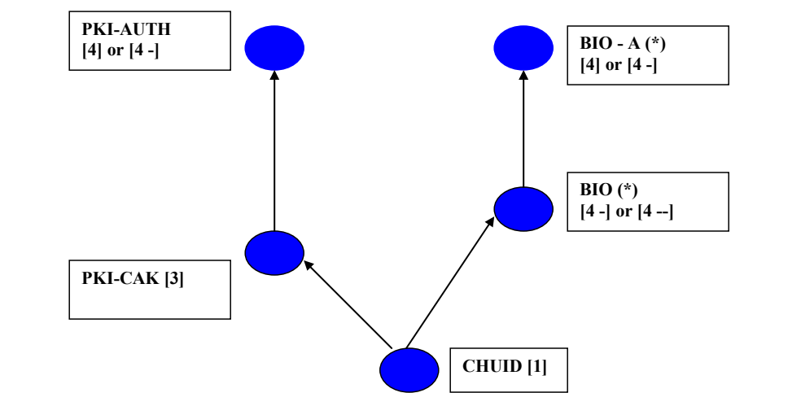
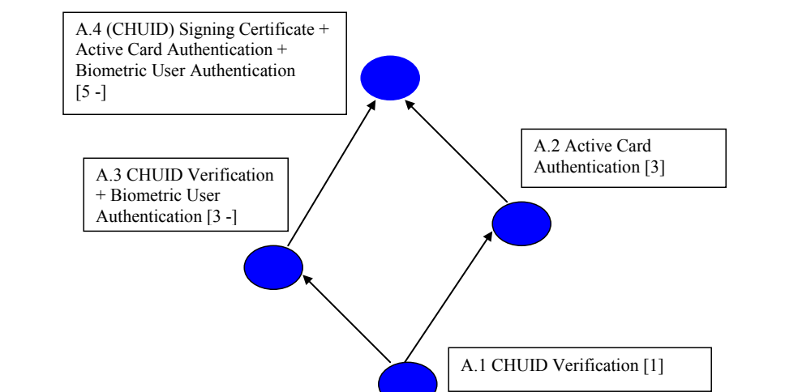

NIST IR 7849 日本語訳
英語タイトル : A Methodology for Developing Authentication Assurance Level Taxonomy for Smart Card-based Identity Verification日本語タイトル : スマートカードによる本人確認のための認証保証レベル分類体系を策定する方法論
公開日 : 2014-03-05
原文URL : https://csrc.nist.gov/pubs/ir/7849/final
翻訳編集 : 自動生成（有志による非公式の日本語訳）, 原文取得日 : 2026-10-31, 訳文 : 293 / 295 ブロック
[要約] NIST IR 7849 は、スマートカードによる本人確認のための認証保証レベル分類体系を策定する方法論を示す報告書です。認証強度を認証要素の数と各要素のエントロピーに基づいて割り当てる従来のアプローチの限界を分析し、カード（トークン）、トークンシークレット、カード保持者、カード発行者、カードに保存された個人識別子という五つのエンティティの間の対ごとのバインディングの強度に基づいて認証強度を割り当てる方法を提案します。この方法論は、スマート ID トークンのフォームファクターが不正使用の脅威を生じさせること、スマートカードに格納される一般的なクレデンシャルオブジェクトがそれらに対処するバインディングを具現していることなどの観察に基づいています。実世界の二つのスマート ID トークン展開における認証保証レベル分類体系の策定に、この方法論を用いる例も示されています。
NISTIR 7849
NISTIR 7849
A Methodology for Developing Authentication Assurance Level Taxonomy for Smart Card-based Identity Verification
スマートカードによる本人確認のための認証保証レベル分類体系を策定する方法論
Ramaswamy Chandramouli
Ramaswamy Chandramouli
http://dx.doi.org/10.6028/NIST.IR.7849
http://dx.doi.org/10.6028/NIST.IR.7849
［NIST のロゴ。公的な標章のため、この非公式サイトには掲載していません。原本 PDF を参照してください。］
NISTIR 7849
NISTIR 7849
A Methodology for Developing Authentication Assurance Level Taxonomy for Smart Card-based Identity Verification
スマートカードによる本人確認のための認証保証レベル分類体系を策定する方法論
Ramaswamy Chandramouli
Computer Security Division
Information Technology Laboratory
Ramaswamy Chandramouli
コンピュータセキュリティ部門
情報技術研究所
http://dx.doi.org/10.6028/NIST.IR.7849
http://dx.doi.org/10.6028/NIST.IR.7849
March 2014
2014年3月
［米国商務省の紋章。公的な標章のため、この非公式サイトには掲載していません。原本 PDF を参照してください。］
U.S. Department of Commerce
Penny Pritzker, Secretary
米国商務省
Penny Pritzker 長官
National Institute of Standards and Technology
Patrick D. Gallagher, Under Secretary of Commerce for Standards and Technology and Director
米国国立標準技術研究所
Patrick D. Gallagher、商務省次官（標準・技術担当）兼所長
National Institute of Standards and Technology Interagency or Internal Report 7849
40 pages (March 2014)
National Institute of Standards and Technology Interagency or Internal Report 7849
40ページ（2014年3月）
Certain commercial entities, equipment, or materials may be identified in this document in order to describe an experimental procedure or concept adequately. Such identification is not intended to imply recommendation or endorsement by NIST, nor is it intended to imply that the entities, materials, or equipment are necessarily the best available for the purpose.
本書では、実験の手順や概念を適切に説明するために、特定の商業的主体、機器、または資材を挙げている場合があります。こうした記載は、NIST による推奨や支持を意味するものではなく、また、挙げられた主体、資材、または機器がその目的に最適であると意味するものでもありません。
There may be references in this publication to other publications currently under development by NIST in accordance with its assigned statutory responsibilities. The information in this publication, including concepts and methodologies, may be used by Federal agencies even before the completion of such companion publications. Thus, until each publication is completed, current requirements, guidelines, and procedures, where they exist, remain operative. For planning and transition purposes, Federal agencies may wish to closely follow the development of these new publications by NIST.
本刊行物では、法令で定められた責務に従って NIST が現在策定中の他の刊行物に言及している場合があります。概念や方法論を含む本刊行物の情報は、そうした関連刊行物の完成前であっても、連邦機関が使用してもよいです。したがって、それぞれの刊行物が完成するまでは、現行の要件、ガイドライン、手順が存在する場合には、それらが引き続き有効です。計画および移行のため、連邦機関は、NIST によるこれらの新しい刊行物の策定状況を注意深く追うことを検討してもよいです。
Organizations are encouraged to review all draft publications during public comment periods and provide feedback to NIST. All NIST Computer Security Division publications, other than the ones noted above, are available at http://csrc.nist.gov/publications.
組織は、パブリックコメント期間中にすべてのドラフト刊行物を確認し、NIST にフィードバックを提供することが推奨されています。上記以外の NIST コンピュータセキュリティ部門のすべての刊行物は、http://csrc.nist.gov/publications で入手できます。
Comments on this publication may be submitted to:
National Institute of Standards and Technology
Attn: Computer Security Division, Information Technology Laboratory
100 Bureau Drive (Mail Stop 8930) Gaithersburg, MD 20899-8930
本刊行物へのコメントは、次の宛先に提出できます。
米国国立標準技術研究所
宛先：コンピュータセキュリティ部門、情報技術研究所
100 Bureau Drive (Mail Stop 8930) Gaithersburg, MD 20899-8930
Reports on Computer Systems Technology
コンピュータシステム技術に関する報告書
The Information Technology Laboratory (ITL) at the National Institute of Standards and Technology (NIST) promotes the U.S. economy and public welfare by providing technical leadership for the Nation’s measurement and standards infrastructure. ITL develops tests, test methods, reference data, proof of concept implementations, and technical analyses to advance the development and productive use of information technology. ITL’s responsibilities include the development of management, administrative, technical, and physical standards and guidelines for the cost-effective security and privacy of other than national security-related information in Federal information systems.
米国国立標準技術研究所（NIST）の情報技術研究所（ITL）は、国の計測・標準インフラストラクチャに対する技術的リーダーシップを提供することで、米国経済と公共の福祉を促進しています。ITL は、情報技術の開発と生産的な利用を進めるため、テスト、テスト方法、参照データ、概念実証実装、および技術分析を開発しています。ITL の責務には、連邦情報システムにおける国家安全保障関連以外の情報のセキュリティとプライバシーを費用対効果の高い形で確保するための、管理面、行政面、技術面、物理面の標準およびガイドラインの策定が含まれます。
Abstract
概要
Smart cards (smart identity tokens) are now being extensively deployed for identity verification for controlling access to Information Technology (IT) resources as well as physical resources. Depending upon the sensitivity of the resources and the risk of wrong identification, different authentication use cases are being deployed. Assignment of authentication strength for each of the use cases is often based on: (a) the total number of three common orthogonal authentication factors – What You Know, What You Have and What You are, and (b) the entropy associated with each factor chosen. The objective of this paper is to analyze the limitation of this approach and present a methodology for assigning authentication strengths based on the strength of pair wise bindings between the five entities involved in smart card based authentications – the card (token), the token secret, the card holder, the card issuer, and the person identifier stored in the card. The rationale for the methodology is based on the following three observations: (a) The form factor of the smart identity token introduces some threats of misuse; (b) the common set of credentials objects provisioned to a smart card embody bindings to address those threats and (c) the strength of an authentication use case should therefore be based on the number and type of binding verifications that are performed in the constituent authentication mechanisms.The use of the methodology for developing an authentication assurance level taxonomy for two real world smart identity token deployments is also illustrated.
スマートカード（スマート ID トークン）は現在、情報技術（IT）資源および物理的資源へのアクセスを制御するための本人確認に、広く展開されています。資源の機微性と誤った識別のリスクに応じて、さまざまな認証ユースケースが展開されています。各ユースケースに割り当てられる認証強度は、多くの場合、(a) 三つの一般的な直交する認証要素（知っているもの、持っているもの、本人であるもの）の総数と、(b) 選択された各要素に関連するエントロピーに基づいています。本書の目的は、このアプローチの限界を分析し、スマートカードによる認証に関与する五つのエンティティ（カード（トークン）、トークンシークレット、カード保持者、カード発行者、カードに保存された個人識別子）の間の対ごとのバインディングの強度に基づいて認証強度を割り当てる方法論を示すことです。この方法論の根拠は、次の三つの観察に基づいています。(a) スマート ID トークンの形状はいくつかの不正使用の脅威を生じさせます。(b) スマートカードに格納される一般的なクレデンシャルオブジェクトの集合は、それらの脅威に対処するバインディングを具現しています。(c) したがって、認証ユースケースの強度は、構成要素となる認証メカニズムで実施されるバインディング検証の数と種類に基づくべきです。この方法論を、実世界の二つのスマート ID トークン展開における認証保証レベル分類体系の策定に用いる例も示します。
Keywords
キーワード
card issuer; cardholder trait (biometric); person identifier; smart identity token; token secret.
card issuer; cardholder trait (biometric); person identifier; smart identity token; token secret.
Acknowledgements
謝辞
The author, Ramaswamy Chandramouli (Mouli), would like to thank his colleagues Hildegard Ferraiolo and Patrick Grother for serving as reviewers for this document. The author also acknowledges Elizabeth Lennon for her technical editing and administrative support.
著者の Ramaswamy Chandramouli（Mouli）は、本書のレビュアーを務めてくれた同僚の Hildegard Ferraiolo 氏と Patrick Grother 氏に感謝します。また、技術編集と事務面の支援を提供してくれた Elizabeth Lennon 氏にも謝意を表します。
Audience
対象読者
This document analyzes the authentication mechanisms used with smart identity tokens based on some fundamental principles in order to derive a metric for assigning appropriate authentication strengths to them. The potential audiences that could benefit from this document are:
本書は、スマート ID トークンで使用される認証メカニズムを、いくつかの基本原則に基づいて分析し、適切な認証強度を割り当てるための指標を導き出します。本書が役に立つ可能性のある読者層は次のとおりです。
•Public and Private Sector communities seeking to deploy smart cards for identity verification (smart identity tokens) for various access control applications;
•さまざまなアクセス制御アプリケーションのために、本人確認用のスマートカード（スマート ID トークン）の展開を目指す公共部門および民間部門のコミュニティ
•Vendor communities seeking to personalize smart identity tokens; and
•スマート ID トークンのパーソナライズを目指すベンダーのコミュニティ
•Testing communities seeking to evaluate smart identity token deployments for required authentication strengths.
•スマート ID トークンの展開が必要な認証強度を満たすかどうかの評価を目指す試験コミュニティ
TABLE OF CONTENTS
目次
1. Introduction
1. 序論
With the proliferation of web-based applications and e-commerce transactions, the field of identity verification or authentication of humans has evolved from the concept of using identities tied to a specific entitlement (e.g., a driver’s license or passport) to the concept of using generic trusted digital identities that can be relied upon and consumed by multiple types of service providers. Another evolutionary trend is the use of multiple form factors to carry or support these trusted identities. Smart cards and Smart phones are two such form factors.
ウェブベースのアプリケーションと電子商取引の普及に伴い、人間の本人確認または認証の分野は、特定の資格（たとえば運転免許証やパスポート）に結び付いた ID を使う考え方から、複数の種類のサービスプロバイダーが依拠して利用できる、汎用的で信頼されたデジタル ID を使う考え方へと進化してきました。もう一つの進化の傾向は、こうした信頼された ID を担持または支援するために、複数のフォームファクターを使用することです。スマートカードとスマートフォンは、そうしたフォームファクターの二つです。
Smart cards are now being extensively deployed for identity verification for controlling access to Information Technology (IT) resources as well as physical resources [Ham2001, Kum2008, TWIC2008].We refer to those types of cards as Smart Identity Tokens and use the two terms interchangeably throughout this paper. These types of smart cards generally carry: (a) A Person Identifier (PI), (b) A Secret (TS) usually in the form of a cryptographic key [EAG2013], (c) A Credential linking the Secret and the Identifier (CR) and (d) A Credential linking the Identifier with a Personal Trait of the Cardholder (e.g., biometric) (BR). Along with these data, another secret, a PIN (a combination of numbers) is often used for: (a) Activating the card (token) and for (b) Restricting access to certain data objects and operations. In some instances, presentation of a live biometric data (such as a fingerprint) is used to enable the above functions instead of a PIN. In any enterprise deploying smart cards, there may be different types of resources that may have to be protected by restricting access to only those whose identity is verified through a smart card based authentication mechanism. Depending upon the sensitivity of the resource and the risk associated with wrong identification of the entity requesting access to those resources, authentication mechanisms use different combinations of the four data types enumerated above (i.e., PI, TS, CR or BR) along with/without an activation data. One or more of authentication mechanisms in turn constitute an authentication use case and a typical identification verification deployment instance uses multiple authentication use cases to cover access to resources of multiple sensitivity levels.
スマートカードは現在、情報技術（IT）資源および物理的資源へのアクセスを制御するための本人確認に、広く展開されています [Ham2001, Kum2008, TWIC2008]。この種のカードをスマート ID トークンと呼び、本書全体で二つの用語を同じ意味で使用します。この種のスマートカードは一般に、(a) 個人識別子（PI）、(b) 通常は暗号鍵の形をとるシークレット（TS）[EAG2013]、(c) シークレットと識別子を結び付けるクレデンシャル（CR）、(d) 識別子とカード保持者の個人的特性（たとえば生体）を結び付けるクレデンシャル（BR）を保持します。これらのデータとともに、別のシークレットである PIN（数字の組合せ）が、(a) カード（トークン）の有効化と、(b) 特定のデータオブジェクトと操作へのアクセス制限のために使用されることがよくあります。場合によっては、PIN の代わりに、（指紋などの）ライブの生体データの提示が、上記の機能を有効にするために使われます。スマートカードを展開するどのエンタープライズにも、スマートカードによる認証メカニズムを通じて本人確認された者だけがアクセスできるよう制限することで保護しなければならない、さまざまな種類の資源が存在する場合があります。資源の機微性と、それらの資源へのアクセスを要求するエンティティの誤った識別に伴うリスクに応じて、認証メカニズムは、上に列挙した四つのデータ型（すなわち PI、TS、CR、BR）を、有効化データを伴って、または伴わずに、さまざまに組み合わせて使用します。一つ以上の認証メカニズムが認証ユースケースを構成し、典型的な本人確認の展開事例では、複数の機微性レベルの資源へのアクセスを網羅するために、複数の認証ユースケースを使用します。
The choice of an authentication use case (irrespective of whether a smart identity token is used or not) in any deployment instance, therefore, depends upon the overall authentication assurance level provided by the combination of constituent authentication mechanisms.The usage of a token by a claimant during an authentication event results in a value called Authenticator that is generated by the token and is transmitted from the token to the authentication module or the verifier. The basis for designating an authentication strength associated with a token is a fundamental unit called “Authentication Factor”. There are three main authentication factors [OMB2003]:
したがって、展開事例における認証ユースケースの選択は、スマート ID トークンを使用するかどうかにかかわらず、構成要素である認証メカニズムの組合せが提供する全体的な認証保証レベルに依存します。認証イベントにおいて請求者がトークンを使用すると、トークンが生成する認証器と呼ばれる値が生じ、これがトークンから認証モジュールまたは検証者へ送信されます。トークンに関連する認証強度を指定する基礎は、「認証要素」と呼ばれる基本単位です。主な認証要素は三つあります [OMB2003]。
•What the Entity Knows (e.g., Password, PIN, etc)
•エンティティが知っているもの（たとえばパスワード、PIN など）
•What the Entity Has (e.g., possession of a token that generates one-time passwords)
•エンティティが持っているもの（たとえばワンタイムパスワードを生成するトークンの所持）
•What the Entity Is (e.g., inherent physiological characteristic such as a fingerprint)
•エンティティ本人であるもの（たとえば指紋のような固有の生理学的特性）
A token that uses one of the above three factors is called a single factor token (e.g., a password that belongs to “What the Entity Knows” factor). A token that uses a combination of two or more of the above factors is called a multi-factor token. A smart card that contains an embedded private cryptographic key (thus using “What the Entity Has” authentication factor) that can be used to generate an authenticator when it is activated by a PIN, (using the “What the Entity Knows” authentication factor) is deemed a two-factor token. An authentication use case may use one or more tokens and hence may involve the use of one or more authentication factors. In general, the authentication strength associated with an authentication use case is determined based on the combination of the following metrics:
上記の三つの要素のうち一つを使用するトークンは、単一要素トークンと呼ばれます（たとえば、「エンティティが知っているもの」という要素に属するパスワード）。上記の要素の二つ以上の組合せを使用するトークンは、多要素トークンと呼ばれます。暗号用秘密鍵を内蔵し（したがって「エンティティが持っているもの」という認証要素を使用し）、PIN（「エンティティが知っているもの」という認証要素を使用）で有効化されたときに認証器を生成できるスマートカードは、二要素トークンと見なされます。認証ユースケースは、一つ以上のトークンを使用する場合があり、したがって一つ以上の認証要素の使用を伴う場合があります。一般に、認証ユースケースに関連する認証強度は、次の指標の組合せに基づいて決まります。
•The number of authentication factors used in the authentication use case
•認証ユースケースで使用される認証要素の数
•The Entropy associated with each of the authenticator factors used
•使用される各認証要素に関連するエントロピー
In this publication, we argue that the logic for assigning authentication strength based on the number of authentication factors in an authentication use case is valid only under certain limiting conditions and that these conditions do not hold in the case of authentication use cases using smart cards as identity tokens. This is the rationale for proposing a new methodology for: (a) Assigning authentication strengths or levels for various authentication use cases involving smart identity tokens and (b) Deriving an authentication assurance taxonomy using the relative strengths of all authentication use cases specified for the deployment.
本刊行物では、認証ユースケースにおける認証要素の数に基づいて認証強度を割り当てる論理は、ある限定的な条件の下でのみ有効であり、それらの条件は、スマートカードを ID トークンとして使用する認証ユースケースでは成り立たないと論じます。これが、(a) スマート ID トークンを伴うさまざまな認証ユースケースに認証強度またはレベルを割り当て、(b) 展開向けに規定されたすべての認証ユースケースの相対的な強度を用いて認証保証の分類体系を導出するための、新しい方法論を提案する根拠です。
The limitations of the authentication factor-based approach for determining authentication assurance level and justifications for a new methodology are outlined in Sec. 2. The overall anatomy of smart card-based identity verification is analyzed in Sec. 3. The analysis leads to the identification of bindings established in the initial phases of smart card-based identity verification deployment which then forms the foundational concept for our methodology. The next two sections (Sec. 4 and 5) describe the core steps of our methodology. In Sec. 4, we enumerate the typical set of data objects found in smart cards used in identity verification, the trust bindings each of those objects embodies and the primitive authentication mechanisms that verify those bindings. Section 5 goes on to demonstrate the process of deriving an authentication strength (based on the composition of verified bindings as well as their number and type) for any authentication use case constructed using the primitive authentication mechanisms discussed in Sec. 4. By examining the composition of the “set of verified bindings” in various authentication use cases, it is possible to derive partial orderings among those use cases. These partial orderings, in turn, are used to develop the authentication assurance taxonomy for the total set of authentication use cases specified for a smart identity token deployment. Section 6 provides the conclusions and benefits of our methodology.
認証保証レベルを決定するための認証要素に基づくアプローチの限界と、新しい方法論が必要とされる根拠を、第 2 節に概説します。スマートカードによる本人確認の全体的な構造を第 3 節で分析します。この分析により、スマートカードによる本人確認の展開の初期フェーズで確立されるバインディングが特定され、それが私たちの方法論の基礎となる概念を形成します。続く二つの節（第 4 節と第 5 節）は、私たちの方法論の中核となるステップを説明します。第 4 節では、本人確認に使用されるスマートカードに見られるデータオブジェクトの典型的な集合、それぞれのオブジェクトが具現する信頼バインディング、およびそれらのバインディングを検証する基本的な認証メカニズムを列挙します。第 5 節では、第 4 節で論じた基本的な認証メカニズムを使って構成された任意の認証ユースケースについて、（検証されたバインディングの構成と、その数および種類に基づく）認証強度を導出するプロセスを示します。さまざまな認証ユースケースにおける「検証されたバインディングの集合」の構成を調べることで、それらのユースケース間の半順序を導出できます。そして、これらの半順序を用いて、スマート ID トークンの展開向けに規定された認証ユースケースの全体集合に対する認証保証の分類体系を策定します。第 6 節では、私たちの方法論の結論と利点を示します。
In Appendices A and B we demonstrate the use of our methodology to real-world smart identity token deployments. The deployments are: (a) Personal Identity Verification (PIV) program of the US Government and (b) Transporation Worker Identification program (TWIC) of the Department of Homeland Security. More specifically, Appendix A describes the application of our methodology to PIV authentication use cases while Appendix B illustrates our methodology for TWIC authentication use cases. The outcome of the assignment of authentication assurance levels based on our methodology to the complete set of authentication use cases in these two deployments results in an authentication assurance taxonomy for each of them.
付録 A と付録 B では、私たちの方法論を実世界のスマート ID トークンの展開に適用して示します。その展開とは、(a) 米国政府の個人識別検証（PIV）プログラムと、(b) 国土安全保障省の運輸労働者識別（TWIC）プログラムです。より具体的には、付録 A は PIV の認証ユースケースへの私たちの方法論の適用を説明し、付録 B は TWIC の認証ユースケースに対する私たちの方法論を例示します。これら二つの展開におけるすべての認証ユースケースに、私たちの方法論に基づいて認証保証レベルを割り当てた結果、それぞれの認証保証分類体系が得られます。
2. Limitations of Authentication Factor-Based Approach
2. 認証要素に基づくアプローチの限界
In identity verification schemes where trusted identities are provisioned to devices with various form factors (e.g., smart cards, smart phones etc), the authentication factor-based approach for determining authentication strengths (for authentication mechanisms) does not provide the right measure of identity assurance. This is due to the fact that the form factor of the devices introduces some threats of misuse which may not be adequately detected by some authentication mechanisms used in those devices-based identity verification deployments. These threats are briefly described here below. We use the abbreviation convention FF-Tx to designate each threat (FF stands for Form Factor and Tx is the sequence number for the threat)
信頼できる ID がさまざまなフォームファクターのデバイス（たとえばスマートカード、スマートフォンなど）に配備される本人確認方式では、認証メカニズムの認証強度を決定するための認証要素に基づくアプローチは、ID 保証を適切に測定できません。これは、デバイスのフォームファクターが不正使用の脅威をもたらし、それらの脅威が、デバイスに基づく本人確認の展開で使用される一部の認証メカニズムでは十分に検出されない可能性があるためです。これらの脅威を以下に簡潔に説明します。各脅威を示すために FF-Tx という略記の規則を使用します（FF はフォームファクター（Form Factor）を表し、Tx は脅威の通し番号です）。
•FF-T1: STOLEN DEVICE (with unaltered credentials): The person trying to obtain authentication using the device is not the owner of the device/legitimate holder of the credential. This results in “Impersonation” threat.
•FF-T1: デバイスの盗難（クレデンシャルは改変されていない）: デバイスを使って認証を得ようとする者が、デバイスの所有者またはクレデンシャルの正当な保持者ではありません。その結果、「なりすまし」の脅威が生じます。
•FF-T2: CLONED DEVICE (with unaltered credentials): The device containing the credential could be a clone of the device where the original credentials had been provisioned by the legitimate identity provider/credential issuer/authorized device issuer. The threat here is “Unauthorized Proliferation of Credentials and Resulting Misuse.”
•FF-T2: デバイスの複製（クレデンシャルは改変されていない）: クレデンシャルを含むデバイスが、正当な ID プロバイダー、クレデンシャル発行者、または認可されたデバイス発行者によって元のクレデンシャルが配備されたデバイスの複製である可能性があります。ここでの脅威は、「クレデンシャルの不正な拡散とその結果としての不正使用」です。
•FF-T3: FORGED CREDENTIAL: The credential on the device has not originated from an authorized issuer/identity provider. Specifically it does not carry the proof that it was created/assigned by an authorized identity provider and has not been tampered with after issuance.
•FF-T3: 偽造クレデンシャル: デバイス上のクレデンシャルが、認可された発行者または ID プロバイダーに由来していません。具体的には、認可された ID プロバイダーによって作成または割り当てられたことの証明を持たず、発行後に改ざんされていないことの証明も持ちません。
Thus we see that there is a need for an authentication assurance methodology that takes into account inherent characteristics of the device supporting the trusted identities. Since smart card is the most prevalent device used for provisioning of credentials, we now proceed to analyze the anatomy of smart card-based identity verification in the next section.
このように、信頼された ID をサポートするデバイスの固有の特性を考慮に入れた認証保証の方法論が必要であることがわかります。スマートカードは、クレデンシャルの配備に使用される最も普及したデバイスであるため、次の節で、スマートカードによる本人確認の構造の分析に進みます。
3. Anatomy of Smart Card-Based Identity Verification
3. スマートカードによる本人確認の構造
Smart card-based identity verification is the most widely deployed form of device-based authentication scheme where trusted identities are provisioned to credit card-sized plastic cards embedded with an Integrated Circuit Chip (ICC). A deployment instance may use multiple authentication use cases depending upon the sensititivity of the various resources that are sought to be protected in its environment. An authentication use case in turn will consist of one or more authentication mechanisms. Every authentication mechanism, in this context, will involve use of the device (the smart card or smart identity token1 in our context) but some of them may not require participation of the user/bearer of the device since the underlying protocol may not call for the bearer input (e.g., a PIN or biometric sample).
スマートカードによる本人確認は、信頼できる ID を、集積回路チップ（ICC）を内蔵したクレジットカード大のプラスチックカードに配備する、デバイスベースの認証方式として最も広く展開されている形態です。展開事例では、その環境で保護しようとするさまざまな資源の機微性に応じて、複数の認証ユースケースを使用します。認証ユースケースは、一つ以上の認証メカニズムで構成されます。この文脈では、すべての認証メカニズムがデバイス（ここではスマートカードまたはスマート ID トークン1）の使用を伴いますが、基になるプロトコルがデバイスの所持者の入力（たとえば PIN や生体サンプル）を求めない場合があるため、一部のメカニズムではデバイスのユーザーまたは所持者の関与が不要なことがあります。
In order to assess the authentication strengths associated with authentication mechanisms using a smart card, we need to look at the typical phases involved in any smart card-based identity verification scheme (smart identity token) deployment. They are:
スマートカードを使用する認証メカニズムに関連する認証強度を評価するには、スマートカードによる本人確認方式（スマート ID トークン）の展開に共通する典型的なフェーズを検討する必要があります。それらは次のとおりです。
•Identity Token Eligibility Determination Phase
•ID トークンの適格性判定フェーズ
•Identity Token Issuance Phase
•ID トークンの発行フェーズ
•Identity Token Usage Phase
•ID トークンの使用フェーズ
Out of the three phases above, the authentication mechanisms and by extension the authentication use cases come into the picture only in the Identity Token Usage Phase. Since the objective of this paper is a methodology for assignment of authentication assurance level/strength for authentication use cases, our focus should be on the Identity Token Usage phase. However, we find that in order to arrive at a meaningful authentication strength metric, we need to examine all three phases because of the following rationale.
上記三つのフェーズのうち、認証メカニズム、ひいては認証ユースケースが関わってくるのは、ID トークンの使用フェーズだけです。本書の目的は、認証ユースケースに認証保証レベルまたは認証強度を割り当てる方法論であるため、ID トークンの使用フェーズに焦点を当てるべきです。しかし、意味のある認証強度の指標を導くには、次の根拠により、三つのフェーズすべてを調べる必要があることがわかっています。
•The overall authentication strength in authentication use cases deployed in the Identity Token Usage phase is derived from the combination of trust levels in its constitutent authentication mechanisms. The trust level of an authentication mechanism, in turn, is based on the number of trust bindings (embedded in credential objects) it verifies.
•ID トークンの使用フェーズで展開される認証ユースケースにおける全体的な認証強度は、それを構成する認証メカニズムの信頼レベルの組合せから導かれます。認証メカニズムの信頼レベルは、それが検証する（クレデンシャルオブジェクトに埋め込まれた）信頼バインディングの数に基づきます。
•The trust in the set of credential objects that are provisioned to the smart identity token during the Identity Token Issuance phase comes from the bindings it embodies and from the overall security of the system processes used in their generation – security for the data repositories holding the enrollment records, trust in attestion authority that is vouching for credential bindings (e.g., Certificate Authorities (CAs) for digital certificates).
•ID トークンの発行フェーズでスマート ID トークンに配備されるクレデンシャルオブジェクトの集合に対する信頼は、それらが具現するバインディングと、その生成に使われるシステムプロセス全体のセキュリティ（登録記録を保持するデータリポジトリのセキュリティ、およびクレデンシャルのバインディングを証明するアテステーション機関（たとえばデジタル証明書の認証局（CA））への信頼）に由来します。
•The basis for creation of credential objects in turn is the “Proofed Identity” which is embodied in the set of data records called enrollment records that are created after a successful “Identity Proofing” process in the Identity Token Eligibility Determination phase.
•クレデンシャルオブジェクトを作成する根拠は、ID トークンの適格性判定フェーズでの「身元確認」プロセスの成功後に作成される、登録記録と呼ばれる一連のデータレコードに具現された「確認済み ID」です。
Thus we see that the trust marker or “Proofed Identity” for the individual being authenticated is established in the Token Eligibility Determination Phase which together with other data in the enrollment records forms the basis for creation of credential objects in the Token Issuance phase. The credential objects by definition embody a “stamp of authority” or trust binding in each of them. Since the purpose of any authentication mechanism is to verify/validate those bindings, any assessment of its strength should involve the set of bindings it verifies as a prime metric. Hence identification of the verified bindings of an authentication mechanism logically forms the first step of our methodology. Before we proceed to that step, we take a look at the various activities leading up to the creation of those credential objects and the issuance of the smart identity token in order to fully understand the nature of the trust chain.
このように、認証される個人の信頼の指標すなわち「確認済み ID」は、トークンの適格性判定フェーズで確立され、それが登録記録内の他のデータとともに、トークンの発行フェーズでのクレデンシャルオブジェクト作成の基礎となることがわかります。クレデンシャルオブジェクトは、定義上、それぞれに「権威の証印」すなわち信頼バインディングを具現しています。認証メカニズムの目的は、それらのバインディングを検証することであるため、その強度の評価には、それが検証するバインディングの集合を主要な指標として含めるべきです。したがって、認証メカニズムが検証するバインディングの特定が、私たちの方法論の論理上の最初のステップとなります。そのステップに進む前に、信頼の連鎖の性質を十分に理解するために、これらのクレデンシャルオブジェクトの作成とスマート ID トークンの発行に至るさまざまな活動を見ていきます。
3.1 Trust Creation in Identity Token Eligibility Determination Phase
3.1 ID トークンの適格性判定フェーズにおける信頼の創出
The primary processes in this phase are identity proofing and enrollment/registration. The “identity proofing” starts with verification of one or more source documents attesting to the identity of the intended card/credential holder together with/without consultation of authoritative data repositories (e.g., use of credit history records and the use of Criminal History database for background verification). The degree of trust in the identity of the individual undergoing identity proofing process is determined by the nature and number of source documents used. This trust is then concretized in an artifact called "proofed identity" in order to be carried over to the next phase of the smart identity token deployment. The most common artifact is usually a set of fingerprints [NSTC2008] which are collected at the conclusion of a successful identity proofing process. This artifact thus creates the “binding” between the person who has undergone identity proofing and the "prospective credential holder/identity token holder" since the tokens are going to carry the provisioned credentials.The biographical details gathered from the source documents together with the proofed identity are stored in a formal system of records (called the enrollment records) during the enrollment/registration process of this phase.
このフェーズの主なプロセスは、身元確認と登録（エンロールメント）です。「身元確認」は、カードまたはクレデンシャルの所持者となる予定の人物の身元を証明する一つ以上の資料の検証から始まり、権威あるデータリポジトリ（たとえば、身元調査のための信用履歴記録や犯罪歴データベース）の参照を伴う場合と伴わない場合があります。身元確認プロセスを受ける個人の身元に対する信頼の度合いは、使用される資料の性質と数によって決まります。この信頼は次に、スマート ID トークン展開の次のフェーズへ引き継ぐため、「確認済み ID」と呼ばれる成果物として具体化されます。最も一般的な成果物は通常、身元確認プロセスの成功時に採取される一組の指紋です [NSTC2008]。この成果物は、トークンが配備済みのクレデンシャルを運ぶことになるため、身元確認を受けた人物と「クレデンシャルまたは ID トークンの保持者となる予定の人物」との間の「バインディング」を作ります。このフェーズの登録（エンロールメント）プロセスでは、資料から収集された個人情報の詳細が、確認済み ID とともに、登録記録と呼ばれる正式な記録システムに保存されます。
3.2 Creation of Trust Bindings in the Identity Token Issuance Phase
3.2 ID トークンの発行フェーズにおける信頼バインディングの作成
The processes in this phase include the following:
このフェーズのプロセスには、次のものが含まれます。
•Assignment of a unique person identifier to the token holder: The person identifier can either be: (a) locally unique (e.g., employee number in an organization) or (b) globally unique (i.e., UUID).
•トークン保持者への一意な個人識別子の割り当て: 個人識別子は、(a) ローカルに一意（たとえば組織内の従業員番号）、または (b) グローバルに一意（すなわち UUID）のいずれかとなります。
•Creation of credentials that embody various types of “trust bindings” and provisioning them to the token/smart card: The choice of a trust binding and by extension the choice of a credential that embodies that binding is based on the degree of assurance it provides against exploitation of threats EF-T1, EF-T2 and EF-T3 described in section 2. The required assurance, at the minimum, are:
•さまざまな種類の「信頼バインディング」を具現するクレデンシャルの作成と、そのトークンまたはスマートカードへの配備: 信頼バインディングの選択、ひいてはそのバインディングを具現するクレデンシャルの選択は、第 2 節で説明した脅威 EF-T1、EF-T2、EF-T3 の悪用に対してそれが提供する保証の度合いに基づきます。必要な保証は、最低でも次のとおりです。
(a) The assigned person identifier has originated from an authorized credential/token issuer (assurance against the threat of faked or forged credential –FF-T3);
(a) 割り当てられた個人識別子が、認可されたクレデンシャル/トークン発行者に由来していること（偽造クレデンシャルの脅威 – FF-T3 に対する保証）。
(b) The assigned person identifier pertains to the person who has been successfully “identity proofed”.It is for this purpose that the “proofed identity” created in the token eligibility determination phase is used (assurance that the token recipient is the person who has undergone “identity proofing”);
(b) 割り当てられた個人識別子が、「身元確認」に成功した人物に関するものであること。トークンの適格性判定フェーズで作成された「確認済み ID」が使われるのは、このためです（トークンの受領者が「身元確認」を受けた人物であることの保証）。
(c) The token instance carrying the person identifier is the physical copy to which the identifier was provisioned by the authorized token issuer (assurance against the threat of cloned token-FF-T2); and
(c) 個人識別子を保持するトークンのインスタンスが、認可されたトークン発行者によって識別子が配備された物理的なコピーであること（複製トークンの脅威 - FF-T2 に対する保証）。
(d) The person presenting the token (token holder or cardholder) is the person to whom the token was issued by the authorized token issuer. (assurance against the threat of stolen card/impersonation –FF-T1).
(d) トークンを提示する者（トークン保持者またはカード保持者）が、認可されたトークン発行者によってそのトークンを発行された人物であること。（盗難カード/なりすましの脅威 – FF-T1 に対する保証）。
•The physical handover of the smart identity token to the legitimate credential owner: Here we need the trust (or assurance) that the person receiving the physical token is the same person for whom identity proofing was done and whose credentials are now provisioned to the token. This assurance is obtained by making the token recipient authenticate against the proofed identity created during the token eligibility phase and now provisioned to the token. For example if a set of fingerprints collected during enrollment is used as “proofed identity”, then the token recipient can be made to authenticate against the same set (or subset) of fingerprints that has been provisioned to the card during card personalization. This is accomplished by the token recipient providing a set of live samples of fingerprints and having a successful match as the pre-condition for receiving the token.
•スマート ID トークンを正当なクレデンシャル所有者に物理的に引き渡すこと: ここでは、物理トークンを受け取る人物が、身元確認を受けた人物と同一であり、その人物のクレデンシャルが現在トークンに配備されているという信頼（または保証）が必要です。この保証は、トークン受領者に、トークンの適格性判定フェーズで作成され、現在はトークンに配備されている確認済み ID と照合して認証させることで得られます。たとえば、登録時に採取された一組の指紋が「確認済み ID」として使われる場合、カードのパーソナライズの際にカードに配備された同じ組（またはその一部）の指紋と照合して、トークン受領者を認証させることができます。これは、トークン受領者が一組の生体指紋サンプルを提示し、照合に成功することをトークン受領の前提条件とすることで実現されます。
3.3 Verification of Trust Bindings in Identity Token Usage Phase
3.3 ID トークンの使用フェーズにおける信頼バインディングの検証
This phase involves the exercise of one or more of the authentication use cases (designed for the particular smart identity token deployment) by the designated authentication points or stations. As already mentioned, an authentication use case constitutes one or more authentication mechanisms. Each of the authentication mechanisms by design perform the task of verifying one or more trust bindings created during token issuance phase.
このフェーズでは、（特定のスマート ID トークン展開向けに設計された）認証ユースケースの一つ以上が、指定された認証ポイントまたはステーションによって実行されます。すでに述べたとおり、認証ユースケースは一つ以上の認証メカニズムで構成されます。各認証メカニズムは、設計上、トークン発行フェーズで作成された一つ以上の信頼バインディングを検証する役割を担います。
Having looked at the processes in the three main phases of a smart identity token deployment, it is now time to have a comprehensive view of the entire lifecycle of processes involved. The primary observation that emanates from taking this viewpoint is that the processes that constitute the Card/Token Issuance phase creates various trust links or bindings using some combination of assigned identity, proofed identity and device-specific secrets which are subsequently verified using various authentication use cases deployed during the identity token usage phase. Hence it follows that a metric for determining authentication strength for any authentication use case should be based on the “set of trust bindings verified” as part of that use case.
スマート ID トークン展開の三つの主要フェーズのプロセスを見てきたので、次に、関与するプロセスのライフサイクル全体を包括的に捉えてみます。この視点から得られる主な観察は、カード/トークンの発行フェーズを構成するプロセスが、割り当てられた ID、確認済み ID、およびデバイス固有のシークレットの何らかの組合せを使って、さまざまな信頼リンクまたはバインディングを作り出すということです。これらの信頼リンクまたはバインディングは、その後、ID トークンの使用フェーズで展開されるさまざまな認証ユースケースを使って検証されます。したがって、任意の認証ユースケースの認証強度を決定する指標は、そのユースケースの一部として「検証される信頼バインディングの集合」に基づくべきです。
The choice of the subset of these bindings that should be verified in any authentication use case depends upon the requirements of the access control application for which smart card-based identity verification in general and the authentication use case in particular is used. More specifically, the requirements are dictated by the value and the sensitivity levels of the resources being protected by the access control application and the impact of wrong identification.
任意の認証ユースケースで検証すべきこれらのバインディングの部分集合の選択は、スマートカードによる本人確認全般、特にその認証ユースケースが使用されるアクセス制御アプリケーションの要件に依存します。より具体的には、その要件は、アクセス制御アプリケーションが保護する資源の価値と機微性のレベル、および誤った識別の影響によって決まります。
The highest authentication assurance level is provided by those Authentication Use Cases that verify all bindings created during the identity token issuance phase. The use of an Authentication Use Case that provides the highest assurance level cannot be economically justified. Hence any practical smart identity token deployment uses different authentication use cases for different access control applications within the enterprise.
最も高い認証保証レベルは、ID トークンの発行フェーズで作成されたすべてのバインディングを検証する認証ユースケースによって提供されます。最も高い保証レベルを提供する認証ユースケースの使用は、経済的に正当化できません。したがって、現実的なスマート ID トークンの展開では、エンタープライズ内のアクセス制御アプリケーションごとに、異なる認証ユースケースを使用します。
Given the above observations, we are now ready to lay out a roadmap for developing an authentication assurance level methodology for assigning authentication strengths for various smart card-based authentication use cases. Before going into development steps, we want to designate a name for our methodology and an associated abbreviation to refer to it. The abbreviation we have chosen for our methodology is SCIV-ALM that stands for “Smart Card-based Identity Verification - Assurance Level Methodology.” The specific steps in our roadmap are the following (we have chosen to denote each step with the abbreviation SCIV-ALM-Tx:
上記の観察を踏まえ、スマートカードによるさまざまな認証ユースケースに認証強度を割り当てるための認証保証レベル方法論を策定するロードマップを示す準備ができました。策定のステップに入る前に、私たちの方法論の名称と、それを指す略語を定めておきます。私たちの方法論に選んだ略語は SCIV-ALM で、「Smart Card-based Identity Verification - Assurance Level Methodology（スマートカードによる本人確認 - 保証レベル方法論）」を表します。ロードマップの具体的なステップは次のとおりです（各ステップを SCIV-ALM-Tx という略語で表すことにしました）。
•SCIV-ALM-T1: Identification of the common data objects found in smart identity tokens, the bindings or trust links established/embodied when they were provisioned as part of the issuance process, and primitive authentication mechanism(s) that verifies those bindings during the token usage phase of the smart card deployment.
•SCIV-ALM-T1: スマート ID トークンに見られる共通データオブジェクト、発行プロセスの一環としてそれらを配備する際に確立または具現されるバインディングすなわち信頼リンク、およびスマートカード展開のトークン使用フェーズでそれらのバインディングを検証する基本認証メカニズムの特定。
•SCIV-ALM-T2: Determine the authentication assurance level for each authentication use case used in a real-world smart card-based identity verification deployment based on the primitive authentication mechanisms it comprises of and the number, type and composition of bindings that are verified as a consequence of those mechanisms. Specifically the number and type of verified bindings are used to obtain the “intrinsic authentication strength” of an authentication use case while the composition of the “verified bindings” set is used to derive a partial order (or dominance relationship) among the authentication use cases. These partial orders are used to derive an authentication assurance level taxonomy for the entire deployment instance.
•SCIV-ALM-T2: 実世界のスマートカードによる本人確認の展開で使われる各認証ユースケースについて、それを構成する基本認証メカニズムと、それらのメカニズムの結果として検証されるバインディングの数、種類、および構成に基づき、認証保証レベルを決定すること。具体的には、検証されたバインディングの数と種類を使って認証ユースケースの「固有の認証強度」を求める一方、「検証されたバインディング」の集合の構成を使って認証ユースケース間の半順序（または優位関係）を導出します。これらの半順序を使って、展開事例全体の認証保証レベル分類体系を導出します。
The activities in step SCIV-ALM-T1 are described in the next section whle the corresponding ones in SCIV-ALM-T2 are discussed in Sec. 5.
ステップ SCIV-ALM-T1 の活動は次の節で説明し、SCIV-ALM-T2 の対応する活動は第 5 節で論じます。
4. Smart Cards – Common Credential Objects, Embodied Bindings and Verifying Primitive Authentication Mechanisms
4. スマートカード – 共通のクレデンシャルオブジェクト、具現されたバインディング、およびそれを検証する基本的な認証メカニズム
So far we have made the case that the methodology for assigning authentication strength for any authentication use case should be based on the set of bindings (created/embodied during the card issuance phase) it verifies. Since an authentication use case is composed of primitive authentication mechanisms, we need to look at the common set of objects on the smart identity token that participate in those mechanisms and the bindings that each of these objects embody. Hence, our next steps involve an analysis of the following – the common set of objects carried in an identity smart card, the binding established/embodied by their provisioning to the card and the primitive authentication mechanism that verifies each of the bindings.
ここまでで、任意の認証ユースケースに認証強度を割り当てる方法論は、そのユースケースが検証する（カード発行フェーズで作成または具現された）バインディングの集合に基づくべきだと論じてきました。認証ユースケースは基本的な認証メカニズムで構成されるため、それらのメカニズムに関わるスマート ID トークン上の共通のオブジェクト群と、各オブジェクトが具現するバインディングを調べる必要があります。そのため、次のステップでは、ID スマートカードに格納される共通のオブジェクト群、それらをカードに配備することで確立または具現されるバインディング、および各バインディングを検証する基本的な認証メカニズムを分析します。
4.1 Objects on Smart Identity Tokens
4.1 スマート ID トークン上のオブジェクト
The following are the common set of electronic objects (as opposed to the visual printed objects) in a smart card used as identity tokens along with their classifiers:
次に挙げるのは、ID トークンとして使用されるスマートカードにある共通の電子的オブジェクト（印刷された視覚的なオブジェクトとは区別されます）の集合を、その分類とともに示したものです。
Person Identifiers:
個人識別子:
•Digitally signed Cardholder Unique Identifier (CHUID) that carries the Unique Person Identifier appended with the digital signature of the authorized Card/Token Issuer.
•デジタル署名付きカード保持者固有識別子（CHUID）。認可されたカード/トークン発行者のデジタル署名が付加された、一意な個人識別子を保持します。
Credentials:
クレデンシャル:
•Card Authentication Certificate object (e.g., A digital certificate issued by a CA authorized by the card issuer that attests for the presence of a secret cryptographic key that is exclusive and specific to the copy of the physical token)
•カード認証証明書オブジェクト（たとえば、カード発行者が認可した CA が発行し、物理トークンのコピーに固有かつ専用のシークレット暗号鍵の存在を証明するデジタル証明書）
•Personal Authentication Certificate object [PKI2008] (e.g., A digital Certificate issued by a CA authorized by the card issuer that binds the Person Identifier of the Cardholder/Credential Holder with a Public Cryptographic key (and through this to a private cryptographic key that is a token-held secret)
•個人認証証明書オブジェクト [PKI2008]（たとえば、カード発行者が認可した CA が発行し、カード保持者/クレデンシャル保持者の個人識別子を、公開暗号鍵（およびそれを通じて、トークンが保持するシークレットである秘密暗号鍵）に結び付けるデジタル証明書）
•Digitally signed Biometric object (e.g., A biometric record that contains the Person Identifier along with his/her biometric data and is digitally signed by the authorized Card/Token Issuer)
•デジタル署名付き生体オブジェクト（たとえば、個人識別子とその人の生体データを含み、認可されたカード/トークン発行者がデジタル署名した生体レコード）
Token-held Secrets:
トークンが保持するシークレット:
•Physical Token-exclusive Secret Object (usually carrying the secret associated with an artifact in a public authentication credential - e.g., private key associated with the public key in any digital authentication certificate carried in the Smart Card)
•物理トークン専用のシークレットオブジェクト（通常、公開の認証クレデンシャルにある成果物に関連するシークレットを保持します。たとえば、スマートカードに格納された任意のデジタル認証証明書にある公開鍵に関連する秘密鍵）
•Secret shared between the Physical Token and the Cardholder (e.g., PIN)
•物理トークンとカード保持者が共有するシークレット（たとえば PIN）
•Secret shared between the Card Issuer and the Physical Token (e.g., A symmetric cryptographic key)
•カード発行者と物理トークンが共有するシークレット（たとえば共通鍵）
In the following sections, we provide a brief description of each of the above objects, the binding established/embodied when they are provisioned to the smart identity tokens and the primitive authentication mechanism(s) that verify the presence/validity of each of the bindings.
以下の節では、上記の各オブジェクト、それらをスマート ID トークンに配備したときに確立または具現されるバインディング、および各バインディングの存在または有効性を検証する基本的な認証メカニズムについて、簡潔に説明します。
In addition to the above objects, smart identity tokens also contain a class of objects called Security objects. This class of objects is present in a smart identity token to provide integrity checks on other objects (electronic or printed) found on the card. These objects are generally not used in any authentication use cases. Examples of such objects are:
上記のオブジェクトに加えて、スマート ID トークンには、セキュリティオブジェクトと呼ばれる種類のオブジェクトも含まれます。この種類のオブジェクトは、カードにある他のオブジェクト（電子的なものも印刷されたものも）の完全性を確認するために、スマート ID トークンに存在します。これらのオブジェクトは通常、認証ユースケースでは使用されません。そうしたオブジェクトの例は次のとおりです。
•The printed information object in a PIV card [PIV2013] that contains the digital representation of the visual/printed objects found on the front and rear of that card.
•PIV カードの印刷情報オブジェクト [PIV2013]。カードの表面と裏面にある視覚的/印刷されたオブジェクトのデジタル表現を含みます。
•The security object that contains the concatenated hash of all the electronic objects found in a PIV card that is digitally signed by the issuer of that card. (to provide integrity checks for the entire electronic content of the card)
•PIV カードにあるすべての電子的オブジェクトのハッシュを連結したものを含み、そのカードの発行者がデジタル署名したセキュリティオブジェクト（カードの電子的な内容全体の完全性を確認するため）。
•A symmetric cryptography key that is usually used to establish a secure session with the card for the purpose of electronic personalization of the smart card – populating the card with Identifier, Credential or Security objects or for generating other secret objects such as the private key of an asymmetric cryptographic key pair. Thus it carries the binding between the smart card application administrator and the card. Hence, from the cardholder/credential owner point of view, this binding is not considered relevant since the verification of this binding authenticates just authenticates the smart card application administrator.
•共通鍵暗号鍵。通常、スマートカードの電子的なパーソナライズ（識別子、クレデンシャル、またはセキュリティオブジェクトをカードに書き込むこと、あるいは非対称鍵ペアの秘密鍵などの他のシークレットオブジェクトを生成すること）のために、カードとのセキュアセッションを確立する目的で使用されます。したがって、これはスマートカードアプリケーション管理者とカードとの間のバインディングを保持します。そのため、カード保持者/クレデンシャル所有者の観点からは、このバインディングは関連性がないと見なされます。このバインディングの検証は、スマートカードアプリケーション管理者を認証するだけだからです。
4.2 Digitally Signed Cardholder Unique Identifier (CHUID) Object
4.2 デジタル署名付きカード保持者固有識別子（CHUID）オブジェクト
Person Identifier Objects such as the CHUID are those that contain purely identity data usually appended with an artifact that shows their stamp of authority such as a digital signature. The identity data is made up of one or more unique person identifiers (since we are using the smart cards for personal identity verification) accompanied by associated attributes such as the creation date for the identifier, the expiry date for the identifier etc. The uniqueness of these identifiers holds within the domain in which the smart identity tokens are used – such as the unique identifier for every federal government employee (or contractor) in a government smart identity token program (e.g., PIV program of the civilian US Federal government) or a unique identifier for each employee working in port terminals (e.g., Transportation Worker Identity Credential (TWIC) program). The digital signature on the object is generated by the authorized card/token issuer using its private key. The set of characters constituting the digital signature (the signature string) along with the digital certificate containing the associated public key (called the signing certificate) is inserted into the digital signature block that follows the identity data portion of the object. Thus a digitally signed CHUID object establishes the Card Issuer to Person Identifier binding.
CHUID などの個人識別子オブジェクトは、純粋な識別データを含み、通常、デジタル署名のような権威の証印を示す成果物が付加されたものです。識別データは、（個人の本人確認のためにスマートカードを使用しているため）一つ以上の一意な個人識別子と、識別子の作成日や識別子の有効期限などの関連する属性で構成されます。これらの識別子の一意性は、スマート ID トークンが使用されるドメイン内で成り立ちます。たとえば、政府のスマート ID トークンプログラム（たとえば、米国連邦政府の文民部門の PIV プログラム）におけるすべての連邦政府職員（または請負業者）の一意な識別子や、港湾ターミナルで働く各従業員の一意な識別子（たとえば運輸労働者識別資格（TWIC）プログラム）です。オブジェクト上のデジタル署名は、認可されたカード/トークン発行者がその秘密鍵を使って生成します。デジタル署名を構成する文字の集合（署名文字列）は、関連する公開鍵を含むデジタル証明書（署名用証明書と呼ばれます）とともに、オブジェクトの識別データ部分に続くデジタル署名ブロックに挿入されます。したがって、デジタル署名付き CHUID オブジェクトは、カード発行者と個人識別子の間のバインディングを確立します。
Based on the purpose of its creation and the stamp of authority it carries, the primitive authentication mechanism using the digitally signed CHUID object involves validation of the unique person identifier on the card. The validation of the unique person identifier consists of the following:
作成の目的と、それが保持する権威の証印に基づき、デジタル署名付き CHUID オブジェクトを使用する基本的な認証メカニズムは、カード上の一意な個人識別子の検証を伴います。一意な個人識別子の検証は、次のもので構成されます。
•Ensuring that the person identifier is one of the legitimate identifiers loaded into the access control system (logical or physical); and
•個人識別子が、（論理的または物理的な）アクセス制御システムに登録された正当な識別子の一つであることを確認します。
•The digital signature of the authorized card issuer over the person identifier object (CHUID) verifies.
•個人識別子オブジェクト（CHUID）に対する認可されたカード発行者のデジタル署名が検証されます。
The verification of the digital signature in the CHUID object consists of: (a) Establishing trust in the signing certificate (through PKI path validation and certificate status checking) and (b) Verifying that raw signature string was generated by the private key counterpart of the card issuer's public key found on the signing certificate
CHUID オブジェクトのデジタル署名の検証は、(a) （PKI パス検証と証明書ステータス確認を通じて）署名用証明書への信頼を確立すること、(b) 署名用証明書にあるカード発行者の公開鍵に対応する秘密鍵によって生の署名文字列が生成されたことを検証すること、で構成されます。
Theoretically, the unique personal identifier in the CHUID object is considered as the primary source. Hence authentication use cases involving credential objects such as biometric record or personal authentication certificate (that contain the unique person identifier as a component) always perform the extra step of comparing the unique person identifier extracted from these objects (after obtaining assurance in the validity of the credential as a whole) with the unique person identifier found in the digitally signed CHUID object. This comparison also helps to determine the status of the unique person identifier since attributes associated with the unique person identifier such as expiry date are usually found only in the CHUID object. Thus we see that the person identifier validation is an integral part of any authentication use case involving smart cards since this identifier (along with one or more attributes as needed) is the basis on which all authorization decisions are made.
理論上、CHUID オブジェクト内の一意な個人識別子は、主要なソースと見なされます。したがって、生体レコードや個人認証証明書（一意な個人識別子を構成要素として含む）などのクレデンシャルオブジェクトを伴う認証ユースケースでは、（クレデンシャル全体の有効性について保証を得た後に）これらのオブジェクトから抽出した一意な個人識別子を、デジタル署名付き CHUID オブジェクトにある一意な個人識別子と比較する追加のステップを、常に実行します。この比較は、一意な個人識別子の状態を判断するのにも役立ちます。有効期限など、一意な個人識別子に関連する属性は、通常 CHUID オブジェクトにしか見られないためです。このように、個人識別子の検証は、スマートカードを伴うあらゆる認証ユースケースに不可欠な部分であることがわかります。この識別子（必要に応じて一つ以上の属性とともに）が、すべての認可の判断の基礎となるからです。
4.3 Card Authentication Certificate Object
4.3 カード認証証明書オブジェクト
In certain authentication points (stations), especially those that require fast authentication due to high traffic volume, merely demonstrating that the person to be authenticated is in possession of a cryptographic secret attested by the card /token issuer (or any entity authorized to issue credentials on its behalf) is sufficient. The Card Authentication Certificate object is an example of an object that carries such a type of attestation. This certificate object contains the public key counterpart of the private cryptographic key generated and stored in the smart card and hence deemed to be exclusive and specific to the particular copy of the physical token. The subject in this type of certificate is technically the “Token” itself, and hence many smart card deployments do not clearly mandate as to what the value should be for this field. The binding of the Subject with the Public Key is provided by the signature of the certificate issuer who is a CA authorized by the card issuer and hence the Card Authentication Certificate is an example of a token credential object. Therefore, the binding it establishes is the Card Issuer - Token Secret binding.
特定の認証ポイント（ステーション）、特に通行量が多いために高速な認証を必要とするものでは、認証される人物が、カード/トークン発行者（またはその代理としてクレデンシャルを発行する権限を与えられた任意のエンティティ）によって証明された暗号シークレットを所持していることを示すだけで十分です。カード認証証明書オブジェクトは、この種の証明を保持するオブジェクトの一例です。この証明書オブジェクトには、スマートカード内で生成されて保存される秘密暗号鍵に対応する公開鍵が含まれており、そのため、物理トークンの特定のコピーに固有かつ専用であると見なされます。この種の証明書のサブジェクトは、技術的には「トークン」自体であるため、多くのスマートカード展開では、このフィールドの値を何にすべきかが明確に義務付けられていません。サブジェクトと公開鍵のバインディングは、カード発行者が認可した CA である証明書発行者の署名によって提供されるため、カード認証証明書はトークンクレデンシャルオブジェクトの一例です。したがって、それが確立するバインディングは、カード発行者とトークンシークレットのバインディングです。
The primitive authentication mechanism verifying the authenticity of the above binding is Card Authentication Certificate validation. This validation process, just like any other digital certificate validation process consists of the following:
上記のバインディングの真正性を検証する基本的な認証メカニズムは、カード認証証明書の検証です。この検証プロセスは、他のデジタル証明書の検証プロセスと同様に、次のもので構成されます。
(a) Establishing Trust in the Card Authentication Certificate (ensuring that the certificate was issued by a CA authorized by the card issuer and is currently active, and
(a) カード認証証明書への信頼を確立すること（証明書がカード発行者の認可した CA によって発行され、現在有効であることを確認すること、および
(b) The verification of signature linking the subject (or subject alternate name) of the certificate and its associated public cryptographic key found on the certificate.
(b) 証明書のサブジェクト（またはサブジェクト代替名）と、証明書にあるそれに関連する公開暗号鍵とを結び付ける署名を検証すること。
Validating the Card Authentication Certificate (and thus verifying the Card Issuer - Token Secret binding) represents just the first step in verifying that the physical token has been issued by the right trusted authority. A follow-on step that verifies that the attested secret (described in Sec. 4.6) is indeed held inside the smart card is required. This naturally involves testing for the presence of the private cryptographic key that is the counterpart of the public key in the Card Authentication Certificate. It is this step that verifies the Token Secret - Physical Token binding and proves that the presented copy of the physical token is indeed the authenticator.
カード認証証明書の検証（したがって、カード発行者とトークンシークレットのバインディングの検証）は、物理トークンが正しい信頼された機関によって発行されたことを検証する最初のステップにすぎません。証明されたシークレット（4.6 節で説明）が実際にスマートカードの内部に保持されていることを検証する後続のステップが必要です。これには当然、カード認証証明書の公開鍵に対応する秘密暗号鍵の存在の確認が含まれます。トークンシークレットと物理トークンのバインディングを検証し、提示された物理トークンのコピーが確かに認証器であることを証明するのは、このステップです。
4.4 Personal Authentication Certificate Object
4.4 個人認証証明書オブジェクト
Another common credential object found on a smart token is the Personal Authentication Certificate. This certificate contains the Person Identifier of the Cardholder/Credential Holder (in the Subject or the Subject Alternate Name field) and a Public Cryptographic key counterpart of a token-held secret (i.e., a private cryptographic key). Naturally, the digital signature of the CA that issued this certificate provides the binding between the two values. Therefore the Personal Authentication Certificate establishes the Person Identifier -Token secret binding.
スマートトークンに見られるもう一つの一般的なクレデンシャルオブジェクトは、個人認証証明書です。この証明書には、カード保持者/クレデンシャル保持者の個人識別子（サブジェクトまたはサブジェクト代替名のフィールド内）と、トークンが保持するシークレット（すなわち秘密暗号鍵）に対応する公開暗号鍵が含まれます。当然ながら、この証明書を発行した CA のデジタル署名が、二つの値の間のバインディングを提供します。したがって、個人認証証明書は、個人識別子とトークンシークレットのバインディングを確立します。
Just as in the case of verifying the Card Issuer - Token Secret binding, the primary authentication mechanism for verifying the above binding consists of validating the Digital Authentication Certificate. Again as in the case of Card Issuer- Token Secret binding, the follow-on activity for verifying the Token Secret - Physical Token binding (which thus verifies the secret associated with Person Identifier) involves testing the presence of the private key counterpart (described in Sec. 4.6) of the public key of the certificate, which in this instance is the Personal Authentication Certificate.
カード発行者とトークンシークレットのバインディングを検証する場合と同様に、上記のバインディングを検証する主な認証メカニズムは、デジタル認証証明書の検証で構成されます。ここでも、カード発行者とトークンシークレットのバインディングの場合と同様に、トークンシークレットと物理トークンのバインディング（これにより、個人識別子に関連するシークレットが検証されます）を検証する後続の活動は、証明書（この場合は個人認証証明書）の公開鍵に対応する秘密鍵（4.6 節で説明）の存在の確認を伴います。
4.5 Digitally Signed Biometric Record Object
4.5 デジタル署名付き生体レコードオブジェクト
This is a credential object since it associates the Person Identifier of the Cardholder/Credential Holder with a representation of his/her personal trait (e.g., biometric template) using the digital signature of the card issuer. The resultant digitally signed biometric record object also includes the digital certificate of the signer (generally the card issuer who also signs the CHUID object). Thus a digitally signed biometric record object creates the binding between the person identifier and a personal trait of the cardholder (e.g., his/her fingerprint). Therefore, the primary authentication mechanism using this object involves comparison of a live biometric sample provided by the cardholder to the template that is part of the stored biometric object. Successful execution of this authentication protocol thus verifies the Person Identifier - Cardholder binding. The strength of this binding depends upon the process used in obtaining a live sample of the trait from the cardholder for comparison with the digital representation of the trait stored on the token. Obtaining this live sample under the supervision of a human expert ensures the “liveness” property of the sample and provides the necessary authentication strength for the overall authentication mechanism.
これは、カード保持者/クレデンシャル保持者の個人識別子を、その人の個人的特性の表現（たとえば生体テンプレート）に、カード発行者のデジタル署名を使って関連付けるため、クレデンシャルオブジェクトです。結果として得られるデジタル署名付き生体レコードオブジェクトには、署名者（一般に、CHUID オブジェクトにも署名するカード発行者）のデジタル証明書も含まれます。このように、デジタル署名付き生体レコードオブジェクトは、個人識別子とカード保持者の個人的特性（たとえばその人の指紋）の間のバインディングを作り出します。したがって、このオブジェクトを使用する主な認証メカニズムは、カード保持者が提供するライブの生体サンプルを、保存された生体オブジェクトの一部であるテンプレートと比較することを伴います。この認証プロトコルが正常に実行されると、個人識別子とカード保持者のバインディングが検証されます。このバインディングの強度は、トークンに保存された特性のデジタル表現と比較するために、カード保持者から特性のライブサンプルを取得する際に用いるプロセスに依存します。このライブサンプルを人間の専門家の監督の下で取得することで、サンプルの「生体であること（liveness）」が確保され、認証メカニズム全体に必要な認証強度が得られます。
4.6 Physical Token-exclusive Secret Object
4.6 物理トークン専用のシークレットオブジェクト
Devices that are susceptible to their contents being cloned (such as a smart card) are often made to generate and store a secret that cannot be read through any interface (contact or contactless) and copied to a different instance of the physical token.This is usually the private key of an asymmetric key pair which is generated by a cryptographic key processor resident in the card. The processor is programmed to generate a key pair and return only the public portion of the asymmetric key pair while storing the private portion in a tamper proof way inside the card.
（スマートカードなどの）内容を複製される可能性のあるデバイスは、どのインターフェイス（接触式または非接触式）を通じても読み取れず、物理トークンの別のインスタンスにコピーできないシークレットを、生成して保存するようにされることがよくあります。これは通常、カード内に存在する暗号鍵プロセッサーが生成する非対称鍵ペアの秘密鍵です。プロセッサーは、鍵ペアを生成し、非対称鍵ペアの公開部分だけを返す一方で、秘密部分を耐タンパー性のある方法でカード内に保存するようにプログラムされています。
The private cryptographic key, though cannot be read through any interface, its presence can be revealed by the card through a “private key operation” on a random challenge sent by an authentication system. The presence of the private cryptographic key, an example of a non-shared secret object, is thus verified. This authentication protocol thus verifies the Token Secret - Physical Token binding. The verification of the binding thus addresses the threat due to cloning of a physical artifact carrying the trusted credentials. It does not address the threat of a legitimate card being stolen and used by a non-owner or an impersonator
秘密暗号鍵はどのインターフェイスを通じても読み取れませんが、認証システムから送られたランダムなチャレンジに対する「秘密鍵操作」を通じて、カードがその存在を明らかにすることができます。こうして、非共有シークレットオブジェクトの一例である秘密暗号鍵の存在が検証されます。この認証プロトコルは、このようにしてトークンシークレットと物理トークンのバインディングを検証します。このバインディングの検証は、信頼されたクレデンシャルを保持する物理的な成果物の複製による脅威に対処します。正当なカードが盗まれ、所有者ではない者やなりすまし者に使用される脅威には対処しません。
The private cryptographic key, whose presence is verified, can be the counterpart of a public key in two different types of certificates depending upon the type of authentication. These two types are described below:
存在が検証される秘密暗号鍵は、認証の種類に応じて、二つの異なる種類の証明書にある公開鍵に対応するものとなります。この二つの種類を以下に説明します。
4.6.1 Authenticating the Physical Token
4.6.1 物理トークンの認証
In authentication scenarios where the presence of private cryptographic key is verified merely to authenticate the physical token (to ensure that it is the original physical copy of the token issued by the trusted card issuer and not a cloned version), its public key is part of the “Card Authentication Certificate” (Sec. 4.3). The private cryptographic key that is held in the token is therefore called the “Card Authentication Key”. Since the purpose here is to merely authenticate the physical token, the card authentication certificate usually carries only a dummy or pseudo identifier in its "Subject" field or "Subject Alternate Name" field.
物理トークンを認証する（それが信頼されたカード発行者によって発行されたトークンの元の物理的なコピーであり、複製版ではないことを確認する）ためだけに秘密暗号鍵の存在を検証する認証シナリオでは、その公開鍵は「カード認証証明書」（4.3 節）の一部です。したがって、トークンに保持される秘密暗号鍵は、「カード認証鍵」と呼ばれます。ここでの目的は物理トークンを認証することだけであるため、カード認証証明書は通常、「Subject」フィールドまたは「Subject Alternate Name」フィールドに、ダミーまたは擬似的な識別子だけを保持します。
4.6.2 Authenticating the Association of Person Identifier to the Physical Token
4.6.2 個人識別子と物理トークンとの関連付けの認証
In authentication scenarios where the presence of private cryptographic key is verified because it is treated as a “Secret” associated the person identifier, its public key counterpart is part of the “Personal Authentication Certificate” (Sec. 4.4). The private cryptographic key that is held in the token is therefore called the “Personal Authentication Key.” Since the purpose here is to verify the association of the person identifier with the physical token, the personal authentication certificate will have in its “Subject” or “Subject Alternate Name” field, the person identifier as its value.
秘密暗号鍵が個人識別子に関連付けられた「シークレット」として扱われるため、その存在を検証する認証シナリオでは、それに対応する公開鍵は「個人認証証明書」（4.4 節）の一部です。したがって、トークンに保持される秘密暗号鍵は「個人認証鍵」と呼ばれます。ここでの目的は個人識別子と物理トークンとの関連付けを検証することであるため、個人認証証明書は、その「Subject」または「Subject Alternate Name」フィールドの値として個人識別子を持ちます。
4.7 Secret Shared Betwen Physical Token and Cardholder
4.7 物理トークンとカード保持者が共有するシークレット
The verification of the Person Identifier - Token Secret binding (established by Personal Authentication Certificate) and the verification of the Token Secret - Physical Token binding (established by the non-shared secret object, i.e., Private Cryptographic Key) involves mechanisms that does not require cardholder participation and hence authentication use cases that involve these mechanisms will be successful even in situations where the cardholder is an imposter (i.e., not the card owner/credential holder). Thus the presence of the Personal Authentication Certificate Object and the Physical Token-exclusive secret object (Sec. 4.6) are not sufficient for providing assurance against a stolen card.
（個人認証証明書によって確立される）個人識別子とトークンシークレットのバインディングの検証と、（非共有シークレットオブジェクト、すなわち秘密暗号鍵によって確立される）トークンシークレットと物理トークンのバインディングの検証には、カード保持者の関与を必要としないメカニズムが用いられます。そのため、これらのメカニズムを用いる認証ユースケースは、カード保持者がなりすまし者（すなわちカードの所有者/クレデンシャル保持者ではない者）である場合でも成功します。したがって、個人認証証明書オブジェクトと物理トークン専用のシークレットオブジェクト（4.6 節）が存在するだけでは、盗難カードに対する保証を提供するには不十分です。
To provide this assurance, an object that is of the nature of a shared secret and that establishes the binding between the physical token and the cardholder must be created in the smart identity token. Verification of this binding then provides the assurance that the cardholder is indeed the legitimate owner of the token/credentials. Fortunately, the smart card technology provides the capability to define a “PIN” object whose verification can be made as an access control condition for reading certain "sensitive objects" or for performing certain “sensitive operation.” Using this feature, the identity verification application on the card can be configured to have the “PIN Verification” as an access control condition for the “private key operation” (i.e., digitally signing a random challenge sent by the authentication system using a private cryptographic key), which is one of integral operations of the protocol for testing the presence of a private cryptographic key on the card. Making the card recipient choose a PIN value at the time of issuance in the presence of the card issuer thus completes the process of establishing the Physical Token - Cardholder binding. The primitive authentication mechanism of the cardholder presenting the PIN during the time of authentication verifies this binding and thus addresses the threat of an imposter presenting a stolen card.
この保証を提供するには、共有シークレットの性質を持ち、物理トークンとカード保持者の間のバインディングを確立するオブジェクトを、スマート ID トークン内に作成しなければなりません。このバインディングを検証することで、カード保持者が確かにトークン/クレデンシャルの正当な所有者であるという保証が得られます。幸いなことに、スマートカード技術では「PIN」オブジェクトを定義でき、その検証を、特定の「機微なオブジェクト」の読み取りや特定の「機微な操作」の実行に対するアクセス制御条件にできます。この機能を使って、カード上の本人確認アプリケーションを、「PIN検証」が「秘密鍵操作」（すなわち、認証システムから送られたランダムなチャレンジに対し、秘密鍵を使ってデジタル署名すること）のアクセス制御条件となるよう構成できます。これは、カード上の秘密鍵の存在を試験するプロトコルに不可欠な操作の一つです。発行時にカード発行者の立ち会いの下でカードの受領者に PIN 値を選ばせることで、物理トークンとカード保持者のバインディングを確立するプロセスが完了します。カード保持者が認証時に PIN を提示するという基本的な認証メカニズムが、このバインディングを検証し、それにより盗まれたカードを提示するなりすまし者の脅威に対処します。
4.8 Secret Shared Between Card Issuer and Physical Token
4.8 カード発行者と物理トークンが共有するシークレット
In some instances, the combination of Card Issuer - Token Secret and Token Secret - Physical Token bindings are established by the Card Issuer by injecting a secret symmetric cryptographic key into the smart identity token at the time of issuance. The verification of these bindings takes place through a protocol that enables the token (and in some instances the authentication system as well) to reveal the presence of this symmetric cryptographic key. The primitive authentication mechanism incorporating this protocol is not widely deployed since it requires the authentication station be in possession of the entire set of symmetric keys for all the smart tokens that will be used at that location. Further, only authentication systems in the native domain of the card issuer can be trusted to hold these symmetric secret keys and hence cannot be used in federated and widely interoperable smart identity token deployments.
場合によっては、カード発行者とトークンシークレットのバインディング、およびトークンシークレットと物理トークンのバインディングが、カード発行者によって、発行時にスマート ID トークンへシークレット共通鍵を注入することで確立されます。これらのバインディングは、トークン（場合によっては認証システムも）がこの共通鍵の存在を明らかにできるプロトコルを通じて検証されます。このプロトコルを組み込んだ基本的な認証メカニズムは広く展開されていません。認証ステーションが、その場所で使用されるすべてのスマートトークンの共通鍵一式を所持する必要があるためです。さらに、これらの共通鍵を保持することを信頼できるのはカード発行者の固有ドメイン内の認証システムだけであるため、フェデレーション型で広く相互運用可能なスマート ID トークンの展開では使用できません。
The common set of smart card objects, the bindings established by each of them and the primitive authentication mechanisms that verifies each of those bindings that are discussed in Sec. 4.2 through Sec. 4.8 above are summarized in Table 1 below.
上の 4.2 節から 4.8 節で論じた、スマートカードオブジェクトの共通の集合、それぞれが確立するバインディング、およびそれらのバインディングをそれぞれ検証する基本的な認証メカニズムを、下の表 1 にまとめます。
Table 1: Smart Card Objects, Bindings and Verifying Authentication Mechanisms
表 1: スマートカードのオブジェクト、バインディング、およびそれを検証する認証メカニズム
| Card Object Name - Description | Binding Established/Embodied | Primitive Authentication Mechanism (verifying the bindings) |
|---|---|---|
| Card Holder Unique Identifier (CHUID) Object- An Object containing the Unique Person Identifier that is usually digitally signed by the Card Issuer | Card Issuer – Person Identifier Binding (Strong) | PUM-1: Person Identifier’s origin and integrity checked using its associated digital signature |
| Card Authentication Certificate Object – A digital certificate issued by a CA trusted by Card Issuer that attests to the presence of a cryptographic secret held by the token. | Card Issuer – Token Secret Binding (Strong) (OR) Person Identifier – Token Secret Binding (Strong) (if the card authentication certificate contains the person identifier) | PUM-2.1: Establishing Trust in the Card Authentication Certificate (ensuring that the certificate was issued by a trusted, authorized CA, is currently active and that the digital signature generated by the certificate issuer verifies) |
| Personal Authentication Certificate Object – A digital certificate issued by a CA trusted by Card Issuer that attests to the association of the person identifier with a cryptographic secret held by the token. | Person Identifier – Token Secret Binding (Strong) | PUM-2.2: Establishing Trust in the Personal Authentication Certificate (ensuring that the certificate was issued by a trusted, authorized CA, is currently active and that the digital signature generated by the certificate issuer verifies) |
| An Object containing Physical Token-exclusive Secret - Verifying Presence of non-shared embedded token secret (e.g., An asymmetric private cryptographic key) | Token Secret – Physical Token Binding (Strong) | PUM-3: Verifying Presence of non-shared embedded token secret (tested by sending an input data from the Verifier and verifying the token response through a related artifact) (e.g., checking the presence of asymmetric private key by sending a random challenge and verifying the signed response using its associated validated public key) |
| An Object containing a Secret shared between the Physical Token and the Cardholder (chosen by the recipient of the card at the time of issuance) | Physical Token – Cardholder Binding (Strong or Weak depending upon the entropy of the shared secret) | PUM-4: Verifying the presence of a secret shared (e.g., PIN) between Physical Token and Cardholder (usually used as an access control mechanism for an authentication protocol (e.g., PUM-3)) |
| An Object containing a Secret shared between the Card Issuer and the Physical Token (e.g., a symmetric cryptographic key injected into the smart card by the issuing system at the time of card issuance) | Card Issuer – Physical Token Binding (Strong) | PUM-5: Verifying the presence of a secret shared between the Card Issuer and the Physical Token (e.g., a symmetric cryptographic key) |
| Biometric Record Object: Credential object linking the person identifier with the data representing the personal trait of the cardholder using the digital signature of the card issuer | Person Identifier – Cardholder Trait Binding (Strong) | PUM-6: Trust in the signing certificate established through Certificate Validation and the digital signature in the signed biometric object verified |
| Cardholder Trait – Cardholder (Strong or Weak depending upon the process used in obtaining a live sample of the trait for comparison with the digital representation of the trait stored on the token) | PUM-7.1: The cardholder presents a live sample of biometric data in an unattended authentication station (OR) PUM-7.2: The cardholder presents a live sample of biometric data in an attended authentication station |
| カードオブジェクト名 - 説明 | 確立または具現されるバインディング | 基本的な認証メカニズム（バインディングを検証するもの） |
|---|---|---|
| カード保持者固有識別子（CHUID）オブジェクト - 一意な個人識別子を含むオブジェクトで、通常はカード発行者がデジタル署名する | カード発行者 – 個人識別子のバインディング（強） | PUM-1: 関連するデジタル署名を使って個人識別子の出所と完全性を確認する |
| カード認証証明書オブジェクト – カード発行者が信頼する CA が発行し、トークンが保持する暗号シークレットの存在を証明するデジタル証明書 | カード発行者 – トークンシークレットのバインディング（強）（または） 個人識別子 – トークンシークレットのバインディング（強）（カード認証証明書が個人識別子を含む場合） | PUM-2.1: カード認証証明書への信頼を確立する（信頼され認可された CA が証明書を発行したこと、証明書が現在有効であること、および証明書発行者が生成したデジタル署名を検証できることを確認する） |
| 個人認証証明書オブジェクト – カード発行者が信頼する CA が発行し、個人識別子とトークンが保持する暗号シークレットとの関連付けを証明するデジタル証明書 | 個人識別子 – トークンシークレットのバインディング（強） | PUM-2.2: 個人認証証明書への信頼を確立する（信頼され認可された CA が証明書を発行したこと、証明書が現在有効であること、および証明書発行者が生成したデジタル署名を検証できることを確認する） |
| 物理トークン専用のシークレットを含むオブジェクト - 組み込まれた非共有のトークンシークレット（たとえば、非対称鍵ペアの秘密鍵）の存在を検証する | トークンシークレット – 物理トークンのバインディング（強） | PUM-3: 組み込まれた非共有のトークンシークレットの存在を検証する（検証者から入力データを送り、関連する成果物を通じてトークンの応答を検証することで試験する）（たとえば、ランダムなチャレンジを送り、関連する検証済みの公開鍵を使って署名付き応答を検証することで、非対称鍵ペアの秘密鍵の存在を確認する） |
| 物理トークンとカード保持者が共有するシークレット（発行時にカードの受領者が選ぶ）を含むオブジェクト | 物理トークン – カード保持者のバインディング（共有シークレットのエントロピーに応じて強または弱） | PUM-4: 物理トークンとカード保持者が共有するシークレット（たとえば PIN）の存在を検証する（通常は、認証プロトコル（たとえば PUM-3）のアクセス制御メカニズムとして使われる） |
| カード発行者と物理トークンが共有するシークレット（たとえば、カード発行時に発行システムがスマートカードに注入した共通鍵）を含むオブジェクト | カード発行者 – 物理トークンのバインディング（強） | PUM-5: カード発行者と物理トークンが共有するシークレット（たとえば共通鍵）の存在を検証する |
| 生体レコードオブジェクト: カード発行者のデジタル署名を使って、個人識別子とカード保持者の個人的特性を表すデータを結び付けるクレデンシャルオブジェクト | 個人識別子 – カード保持者の特性のバインディング（強） | PUM-6: 証明書検証によって署名用証明書への信頼が確立され、署名付き生体オブジェクトのデジタル署名が検証される |
| カード保持者の特性 – カード保持者（特性のデジタル表現がトークンに保存されており、それと比較するライブサンプルの取得方法によって強または弱となる） | PUM-7.1: カード保持者が、無人の認証ステーションで生体データのライブサンプルを提示する（または） PUM-7.2: カード保持者が、有人の認証ステーションで生体データのライブサンプルを提示する |
4.9 Threat Coverage of Primitive Authentication Mechanisms
4.9 基本的な認証メカニズムによる脅威のカバー範囲
Primitive authentication mechanisms that perform the task of either: (a) validating the attestation of the person identifier by the authorized card/token issuer by verifying the digital signature attached it (PUM-1) (or) (b) verifying the binding of the person identifier with a private cryptographic secret by first validating the certificate that contains its public counterpart and the person identifier and then testing the presence of the private cryptographic secret (PUM-2.2 and PUM-3) address the threat of forged credentials (FF-T3).
次のいずれかの役割を果たす基本的な認証メカニズムは、偽造クレデンシャルの脅威（FF-T3）に対処します。(a) 個人識別子に付加されたデジタル署名を検証することで、認可されたカード/トークン発行者による個人識別子の証明を検証する（PUM-1）、または (b) 対応する公開鍵と個人識別子を含む証明書をまず検証し、次に秘密暗号鍵の存在を試験することで、個人識別子と秘密暗号鍵のバインディングを検証する（PUM-2.2 と PUM-3）。
Primitive authentication mechanisms that perform the task of either: (a) verifying the binding of the person identifier with a personal trait sample (e.g., biometric) and perform a comparison of a live sample of a biometric from a cardholder with the validated trait stored on the card (PUM-6, PUM-7 and PUM-8), or (b) verifying cardholder knowledge of a secret shared between the himself/herself (PUM-4) address the threat of an imposter presenting somebody else’s token to the authentication system (FF-T1).
次のいずれかの役割を果たす基本的な認証メカニズムは、他人のトークンを認証システムに提示するなりすまし者の脅威（FF-T1）に対処します。(a) 個人識別子と個人的特性のサンプル（たとえば生体）のバインディングを検証し、カード保持者のライブ生体サンプルを、カードに保存された検証済みの特性と比較する（PUM-6、PUM-7、PUM-8）、または (b) カード保持者自身と共有するシークレットについて、カード保持者が知っていることを検証する（PUM-4）。
Primitive authentication mechanisms that perform the task of either: (a) validating a certificate object that contains an attestation of a non-tamper proof secret specific to the particular physical copy of the token and then testing the presence of that tamper-proof cryptographic secret (PUM-2.1 and PUM-3) or (b) testing the presence of a cryptographic secret shared between the card issuer and the particular physical copy of the token (PUM-5) address the threat of a cloned copy of a valid token being presented to the authentication system (FF-T2).
次のいずれかの役割を果たす基本的な認証メカニズムは、有効なトークンの複製が認証システムに提示される脅威（FF-T2）に対処します。(a) トークンの特定の物理的コピーに固有の、耐タンパー性のあるシークレットの証明を含む証明書オブジェクトを検証し、次にその耐タンパー性のある暗号シークレットの存在を試験する（PUM-2.1 と PUM-3）、または (b) カード発行者とトークンの特定の物理的コピーの間で共有される暗号シークレットの存在を試験します（PUM-5）。
Thus we see that the set of all primitive authentication mechanisms collectively provide coverage for the entire set of threats identified in Sec. 2. It must be mentioned however that some of the primitive authentication mechanisms address a threat only partially (we use 50% value to denote this) and need a follow-on mechanism (that together form a complete authentication protocol) to completely address a threat. The threats addressed (and not addressed) by each primitive authentication mechanism are listed in Table 2 below:
このように、すべての基本的な認証メカニズムが全体として、第 2 節で特定された脅威の全体集合をカバーしていることがわかります。ただし、一部の基本的な認証メカニズムは、脅威に部分的にしか対処せず（これを示すために 50% という値を使います）、脅威に完全に対処するには、後続のメカニズム（合わせて完全な認証プロトコルを構成する）が必要であることに触れておく必要があります。各基本的な認証メカニズムが対処する（および対処しない）脅威を、下の表 2 に挙げます。
Table 2: Threat Coverage of Primitive Authentication Mechanisms
表 2: 基本的な認証メカニズムによる脅威のカバー範囲
| Primitive Authentication Mechanism (Bindings Verified) | Threats Addressed (Percentage of Coverage) | Unaddressed Threat (and hence) Inherent Weakness |
|---|---|---|
| PUM-1: Person Identifier’s origin and integrity checked using its associated digital signature (Card Issuer – Person Identifier Binding (Strong)) | FORGED CREDENTIAL (100%) | 1.STOLEN CARD – cardholder non-participation 2. CLONED CARD – physical token not validated |
| PUM-2.1: Establishing Trust in the Card Authentication Certificate (ensuring that the certificate was issued by a trusted, authorized CA, is currently active and that the digital signature generated by the certificate issuer verifies) (Card Issuer – Token Secret Binding (Strong)) | CLONED CARD (50%) | Validity of Person Identifier is established (by linking to a legitimate token-held secret) STOLEN CARD – cardholder non-participation |
| PUM-2.2: Establishing Trust in the Personal Authentication Certificate (ensuring that the certificate was issued by a trusted, authorized CA, is currently active and that the digital signature generated by the certificate issuer verifies) (Person Identifier – Token Secret Binding (Strong)) | FORGED CREDENTIAL (100%) CLONED CARD (50%) | |
| PUM-3: Verifying Presence of non-shared embedded token secret (tested by sending an input data from the Verifier and verifying the token response through a related artifact) (e.g., checking the presence of asymmetric private key by verifying the signed response using its associated validated public key) (Token Secret – Physical Token Binding (Strong)) | CLONED CARD (50%) | Validity of the Physical Token is established STOLEN CARD – cardholder non-participation |
| PUM-4: Verifying the presence of a secret shared (e.g., PIN) between Physical Token and Cardholder (usually used as an access control mechanism for an authentication protocol (e.g., PUM-3)) (Physical Token – Cardholder Binding (Strong or Weak depending upon the entropy of the shared secret) ) | STOLEN CARD (100%) | Card Holder is authenticated to Physical Token CLONED CARD – association between physical token and cardholder can be established without card issuer presence FORGED IDENTIFIER – identifier non-participation |
| PUM-5: Verifying the presence of a secret shared between the Card Issuer and the Physical Token (e.g., a symmetric cryptographic key) (Card Issuer – Physical Token Binding ) | CLONED CARD(100%) | Validity of the Physical Token is established STOLEN CARD – cardholder non-participation FORGED IDENTIFIER – identifier non-participation |
| PUM-6: Trust in the signing certificate established through Certificate Validation and the digital signature in the signed biometric object verified (Person Identifier - Cardholder Binding (Strong)) | FORGED CREDENTIAL (100%) STOLEN CARD (50%) | Validity of Biometric Object Established (by linking it to an authorized creator/card issuer) CLONED CARD – physical token not validated |
| PUM-7.1: The cardholder presents a live sample of biometric data in an unattended authentication station (Cardholder Trait – Cardholder Binding (Weak)) | STOLEN CARD (50%) | Cardholder is weakly authenticated (by linking to the validated biometric object on the card) CLONED CARD – physical token not validated |
| PUM-7.2: The cardholder presents a live sample of biometric data in an attended authentication station (Cardholder Trait – Cardholder Binding (Strong)) | STOLEN CARD (50%) | Cardholder is strongly authenticated (by linking to the validated biometric object on the card) CLONED CARD – physical token not validated |
| 基本的な認証メカニズム（検証されるバインディング） | 対処される脅威（カバー率） | 対処されない脅威（したがって）固有の弱点 |
|---|---|---|
| PUM-1: 関連するデジタル署名を使って個人識別子の出所と完全性を確認する（カード発行者 – 個人識別子のバインディング（強）） | 偽造クレデンシャル（100%） | 1. カードの盗難 – カード保持者が関与しない 2. カードの複製 – 物理トークンが検証されない |
| PUM-2.1: カード認証証明書への信頼を確立する（信頼され認可された CA が証明書を発行したこと、証明書が現在有効であること、および証明書発行者が生成したデジタル署名を検証できることを確認する）（カード発行者 – トークンシークレットのバインディング（強）） | カードの複製（50%） | 個人識別子の有効性が確立される（正当なトークン保持シークレットに結び付けることによる） カードの盗難 – カード保持者が関与しない |
| PUM-2.2: 個人認証証明書への信頼を確立する（信頼され認可された CA が証明書を発行したこと、証明書が現在有効であること、および証明書発行者が生成したデジタル署名を検証できることを確認する）（個人識別子 – トークンシークレットのバインディング（強）） | 偽造クレデンシャル（100%） カードの複製（50%） | |
| PUM-3: 組み込まれた非共有のトークンシークレットの存在を検証する（検証者から入力データを送り、関連する成果物を通じてトークンの応答を検証することで試験する）（たとえば、関連する検証済みの公開鍵を使って署名付き応答を検証することで、非対称鍵ペアの秘密鍵の存在を確認する）（トークンシークレット – 物理トークンのバインディング（強）） | カードの複製（50%） | 物理トークンの有効性が確立される カードの盗難 – カード保持者が関与しない |
| PUM-4: 物理トークンとカード保持者が共有するシークレット（たとえば PIN）の存在を検証する（通常は、認証プロトコル（たとえば PUM-3）のアクセス制御メカニズムとして使われる）（物理トークン – カード保持者のバインディング（共有シークレットのエントロピーに応じて強または弱）） | カードの盗難（100%） | カード保持者が物理トークンに対して認証される カードの複製 – 物理トークンとカード保持者の関連付けを、カード発行者の立ち会いなしに確立できる 偽造識別子 – 識別子が関与しない |
| PUM-5: カード発行者と物理トークンが共有するシークレット（たとえば共通鍵暗号鍵）の存在を検証する（カード発行者 – 物理トークンのバインディング） | カードの複製（100%） | 物理トークンの有効性が確立される カードの盗難 – カード保持者が関与しない 偽造識別子 – 識別子が関与しない |
| PUM-6: 証明書検証によって署名用証明書への信頼が確立され、署名付き生体オブジェクトのデジタル署名が検証される（個人識別子 – カード保持者のバインディング（強）） | 偽造クレデンシャル（100%） カードの盗難（50%） | 生体オブジェクトの有効性が確立される（認可された作成者/ カードの複製 – 物理トークンが検証されない |
| PUM-7.1: カード保持者が、無人の認証ステーションで生体データのライブサンプルを提示する（カード保持者の特性 – カード保持者のバインディング（弱）） | カードの盗難（50%） | カード保持者が弱く認証される（カード上の検証済みの生体オブジェクトに結び付けることによる） カードの複製 – 物理トークンが検証されない |
| PUM-7.2: カード保持者が、有人の認証ステーションで生体データのライブサンプルを提示する（カード保持者の特性 – カード保持者のバインディング（強）） | カードの盗難（50%） | カード保持者が強く認証される（カード上の検証済みの生体オブジェクトに結び付けることによる） カードの複製 – 物理トークンが検証されない |
5. Development of Authentication Assurance Level Taxonomy for Canonical Authentication Use Cases
5. 代表的な認証ユースケースに対する認証保証レベル分類体系の策定
In the previous section, we identified the common data objects in a smart identity token, the trust binding each embodied and the primitive authentication mechanisms that verified those bindings. These activities completed all the activities for the first step SCIV-ALM-T1 of our authentication assurance methodology. The next step of our methodology SCIV-ALM-T2 uses the data obtained from SCIV-ALM-T1 to assign authentication assurance levels to various authentication use cases specified in a smart identity token deployment. An authentication assurance level in our methodology is made up of two components – the intrinsic authentication strength and relative authentication strength. The process used in deriving these two components constitutes the activities of the current step SCIV-ALM-T2.
前の節では、スマート ID トークンに共通するデータオブジェクト、それぞれのオブジェクトが具現する信頼バインディング、およびそれらのバインディングを検証する基本的な認証メカニズムを特定しました。これらの活動により、認証保証方法論の最初のステップ SCIV-ALM-T1 の活動がすべて完了しました。方法論の次のステップ SCIV-ALM-T2 では、SCIV-ALM-T1 から得られたデータを使って、スマート ID トークンの展開で規定されたさまざまな認証ユースケースに認証保証レベルを割り当てます。この方法論における認証保証レベルは、固有の認証強度と相対的な認証強度という二つの構成要素からなります。これら二つの構成要素を導出するプロセスが、現在のステップ SCIV-ALM-T2 の活動を構成します。
•For each authentication use case specified for a deployment, identify the set of primitive authentication mechanisms it is made up of and the consequent number, type and composition of verified bindings.
•展開向けに規定された各認証ユースケースについて、それを構成する基本的な認証メカニズムの集合と、その結果として検証されるバインディングの数、種類、構成を特定します。
•Use the number and type of verified bindings to obtain the “intrinsic authentication strength” of an authentication use case.
•検証されたバインディングの数と種類を使って、認証ユースケースの「固有の認証強度」を求めます。
•Use the composition of the “verified bindings” set and the intrinsic authentication strength of each authentication use case as metrics to derive a partial order (or dominance relationship) sequences among the authentication use cases and use these partial order sequences to develop an authentication assurance level taxonomy for the entire deployment instance.
•各認証ユースケースの「検証されたバインディング」の集合の構成と固有の認証強度を指標として使い、認証ユースケース間の半順序（または優位関係）の系列を導出し、それらの半順序の系列を使って、展開事例全体の認証保証レベル分類体系を策定します。
A close examination of the above two activities may give one the impression that in order to develop our authentication assurance methodology, we need some practical authentication use cases from some real-world smart identity token deployments. In other words, it sounds like we need proof of concept as an integral part of methodology development. In order to avoid that conundrum, we demonstrate the development of rest of our methodology using a set of authentication use cases developed from some first principles. These first principles dictate that the basic goal of any authentication use case is to obtain assurance against one or more of the threats in the set EF-T1, EF-T2 and EF-T3 (refer Sec. 2). To realize this basic goal, every authentication use case must be made up of fundamental building blocks called “Assurance Elements”. Hence it follows that each assurance element must address at least one of the threats in the set referred above. Based upon this logic, we proceed to identify the set of basic assurance elements needed for any smart card-based identity verification deployment.These assurance elements along with threats addressed (in parenthesis) are:
上記の二つの活動を詳しく検討すると、私たちの認証保証方法論を策定するには、実世界のスマート ID トークンの展開から得られた実用的な認証ユースケースが必要だという印象を持つかもしれません。言い換えれば、方法論の策定に、概念実証が不可欠な部分として必要であるように聞こえます。この難問を避けるため、いくつかの第一原理から作成した一組の認証ユースケースを使って、私たちの方法論の残りの策定を示します。これらの第一原理は、あらゆる認証ユースケースの基本的な目標が、脅威の集合 EF-T1、EF-T2、EF-T3 の一つ以上に対する保証を得ることであると定めています（第 2 節を参照）。この基本的な目標を実現するには、すべての認証ユースケースが、「保証要素」と呼ばれる基本的な構成要素で構成されなければなりません。したがって、各保証要素は、上記の脅威の集合のうち少なくとも一つに対処しなければなりません。この論理に基づき、スマートカードによる本人確認の展開に必要な基本的な保証要素の集合を特定していきます。これらの保証要素を、対処する脅威（括弧内）とともに示します。
•A-E1: The credentials on the smart identity token presented to the authentication system have originated from an authorized credential/card issuer and has not been tampered with after issuance – Assurance of non-forged Credentials (EF-T3)
•A-E1: 認証システムに提示されたスマート ID トークン上のクレデンシャルは、認可されたクレデンシャル/カード発行者に由来し、発行後に改ざんされていない – 偽造されていないクレデンシャルの保証（EF-T3）
•A-E2: The physical copy of the token presented to the authentication system is the instance to which the credentials were provisioned by the card issuer – Assurance against Cloned Card (EF-T2)
•A-E2: 認証システムに提示されたトークンの物理的コピーが、カード発行者によってクレデンシャルが配備されたインスタンスである – カードの複製に対する保証（EF-T2）
•A-E3: It can be verified that the credentials do belong to the person presenting the identity token – Assurance against Stolen Card (EF-T1)
•A-E3: クレデンシャルが、ID トークンを提示する人物に確かに属していることを検証できる – カードの盗難に対する保証（EF-T1）
Since each of the above assurance elements cannot be broken into any sub-elements, we can treat each of them as elements of a basis vector, which we shall call as “Assurance Basis Vector.” We can then use all allowable subsets of elements that constitute the assurance basis vector to derive what we term as canonical authentication use cases. The criterion for an allowed subset is that it should include “non-forged credential (personal identifier)” as an assurance element. This is justified based on the fact that irrespective of the sophistication of the authentication protocol, it is the “authenticated person identifier” extracted from the smart card that is going to be the basis for any access (physical or logical) control decision.Our rationale for terming the allowed subsets as “canonical” is based on the fact that they are derived from the basic set of assurance elements.
上記の各保証要素は、それ以上サブ要素に分解できないため、それぞれを基底ベクトルの要素として扱うことができ、これを「保証基底ベクトル」と呼びます。そして、保証基底ベクトルを構成する要素の許容される部分集合をすべて使って、正準認証ユースケースと呼ぶものを導出できます。部分集合が許容される基準は、それが「偽造されていないクレデンシャル（個人識別子）」を保証要素として含むべきであるという点です。これは、認証プロトコルの洗練度にかかわらず、スマートカードから抽出された「認証済み個人識別子」が、物理的または論理的なアクセス制御の判断の基礎となるという事実に基づいて正当化されます。許容される部分集合を「正準」と呼ぶ理由は、それらが基本的な保証要素の集合から導出されることに基づいています。
The set of canonical authentication use cases (along with an identifier for each), the constitutent assurance elements in each of them together with a brief rationale for its possible choice as a candidate in practical smart card-based identity verification deployments is given in Table 3 below:
正準認証ユースケースの集合（それぞれの識別子とともに）、各ユースケースを構成する保証要素、および各ユースケースが実用的なスマートカードによる本人確認の展開で候補として選ばれる可能性がある理由の簡潔な説明を、下の表 3 に示します。
Table 3: Canonical Authentication Use Cases
表 3: 代表的な認証ユースケース
| Canonical Authentication Use Case | Constituent Assurance Element(s) | Rationale for Use in Real-World Deployments |
|---|---|---|
| Authenticate the Credential (A-UC1) | Assurance of non-forged Credentials (Person Identifier) (A-E1) | For low-security applications such as entry into a conference room for an authorized employee within the building |
| Authenticate the Credential and Authenticate the Physical Token (A-UC2) | Assurance against Cloned Card (A-E2)+ Assurance of non-forged Credentials (A-E1) | A large population of users is using the card and there is high probability of cards stolen and/or unreported card loss |
| Authenticate the Credential and Authenticate the Cardholder (A-UC3) | Assurance against Stolen Card (A-E3)+ Assurance of non-forged Credentials (A-E1) | A special set of credentials is issued to a controlled population of users and any proliferation of credentials through cloned tokens is a security risk |
| Authenticate the Credential, Authenticate the Cardholder (A-UC2) and Authenticate the Physical Token (A-UC4) | Assurance against Cloned Card (A-E2)+ Assurance against Stolen Card (A-E3) + Assurance of non-forged Credentials (A-E1) | A high security security environment where credential proliferation as well as stolen cards are security risks |
| 代表的な認証ユースケース | 構成要素の保証要素 | 実世界の展開で使用する理由 |
|---|---|---|
| クレデンシャルを認証する（A-UC1） | 偽造されていないクレデンシャル（個人識別子）の保証（A-E1） | 認可された従業員が建物内の会議室に入室する場合など、低セキュリティの用途 |
| クレデンシャルを認証し、物理トークンを認証する（A-UC2） | カードの複製に対する保証（A-E2）+ 偽造されていないクレデンシャルの保証（A-E1） | 多数のユーザーがカードを使用しており、カードが盗まれたり、紛失が報告されなかったりする可能性が高い場合 |
| クレデンシャルを認証し、カード保持者を認証する（A-UC3） | カードの盗難に対する保証（A-E3）+ 偽造されていないクレデンシャルの保証（A-E1） | 管理されたユーザー集団に特別な一組のクレデンシャルが発行され、複製トークンによるクレデンシャルの拡散がセキュリティリスクとなる場合 |
| クレデンシャルを認証し、カード保持者を認証する（A-UC2）、および物理トークンを認証する（A-UC4） | カードの複製に対する保証（A-E2）+ カードの盗難に対する保証（A-E3）+ 偽造されていないクレデンシャルの保証（A-E1） | クレデンシャルの拡散とカードの盗難の両方がセキュリティリスクとなる高セキュリティ環境 |
The next step in our methodology is to identify the set of constitutent primitive authentication mechanisms that will provide the assurance referred to in each assurance element of the assurance basis vector. For this, we match the threat addressed by each assurance element (obtained from the definition above) with the “Threats Addressed” column in Table 2. The corresponding primitive authentication mechanism and the associated binding verified can then be read out from the first column of the same table. It can be seen from Table 2 that some primitive authentication mechanisms address a particular threat only partially (always assigned a value 50 %). In these situations, we look for a follow-on primitive authentication mechanism that will complete the authentication protocol for fully addressing that threat. This process is repeated for every authentication assurance element.
方法論の次のステップは、保証基底ベクトルの各保証要素が提供する保証を実現するための、構成要素となる基本的な認証メカニズムの集合を特定することです。そのために、各保証要素が対処する脅威（上記の定義から得られる）を、表 2 の「対処される脅威」列と照合します。対応する基本的な認証メカニズムと、それに関連する検証対象のバインディングを、同じ表の最初の列から読み取ることができます。表 2 から、一部の基本的な認証メカニズムは、特定の脅威に部分的にしか対処せず（常に 50 % の値が割り当てられています）、そうした場合は、その脅威に完全に対処する認証プロトコルを完成させる後続の基本的な認証メカニズムを探します。このプロセスを、すべての認証保証要素について繰り返します。
At this stage, we have obtained the set of primitive authentication mechanism(s) (with their associated verified bindings) for each assurance element. Since the canonical authentication use cases are nothing but combinations involving one or more assurance elements, we add up the constitutent primitive mechanisms and the verified bindings for each constitutent assurance element to obtain these values for it.
この段階で、各保証要素に対応する基本的な認証メカニズム（複数の場合あり）と、それに関連する検証済みバインディングの集合が得られました。代表的な認証ユースケースは一つ以上の保証要素の組合せなので、各ユースケースを構成する保証要素それぞれについて、基本的な認証メカニズムと検証済みバインディングを合算し、そのユースケースの値を求めます。
The set of primitive authentication mechanisms and the set of verified bindings for each canonical authentication use case constructed using data in Table 2 is given in Table 4 below:
表 2 のデータを使って構成した、各代表的な認証ユースケースの基本的な認証メカニズムの集合と、検証されるバインディングの集合を、下の表 4 に示します。
Table 4: Verified Bindings (along with their types) for Canonical Authentication Use Cases
表 4: 代表的な認証ユースケースの検証されるバインディング（その種類とともに）
| Canonical Authentication Use Case | Primitive Authentication Mechanism(s) | Verified Bindings and Their Associated Type (Strong or Weak) |
|---|---|---|
| Authenticate the Credential (A-UC1) | PUM-1: Person Identifier’s origin and integrity checked using its associated digital signature | 1. (Card Issuer – Person Identifier Binding (Strong)) |
| Authenticate the Credential and Authenticate the Physical Token (A-UC2) | PUM-1: Person Identifier’s origin and integrity checked using its associated digital signature PUM-2.1(or PUM-2.2): Establishing Trust in the Card Authentication Certificate (or Personal Authentication Certificate) (ensuring that the certificate was issued by a trusted, authorized CA, is currently active and that the digital signature generated by the certificate issuer verifies) PUM-3: Verifying Presence of non-shared embedded token secret (tested by sending an input data from the Verifier and verifying the token response through a related artifact) (e.g., checking the presence of asymmetric private key by verifying the signed response using its associated validated public key) | 1. (Card Issuer – Person Identifier Binding (Strong)) 2. (Card Issuer – Token Secret Binding (Strong)) 3. (Token Secret – Physical Token Binding (Strong)) |
| Authenticate the Credential and Authenticate the Cardholder (A-UC3) | PUM-1: Person Identifier’s origin and integrity checked using its associated digital signature PUM-4: Verifying the presence of a secret shared (e.g., PIN) between the cardholder and the physical token. (usually used as an access control mechanism for another authentication protocol (e.g., PUM-3)) | 1. (Card Issuer – Person Identifier Binding (Strong)) 2. (Physical Token – Cardholder Binding (Strong or Weak depending upon the entropy of the shared secret)) |
| Authenticate the Credential, Authenticate the Physical Token and Authenticate the Cardholder (A-UC4) | PUM-1: Person Identifier’s origin and integrity checked using its associated digital signature PUM-2.1(or PUM-2.2): Establishing Trust in the Card Authentication Certificate (or Personal Authentication Certificate) (ensuring that the certificate was issued by a trusted, authorized CA, is currently active and that the digital signature generated by the certificate issuer verifies) PUM-3: Verifying Presence of non-shared embedded token secret (tested by sending an input data from the Verifier and verifying the token response through a related artifact) (e.g., checking the presence of asymmetric private key by verifying the signed response using its associated validated public key) PUM-4: Verifying the presence of a secret shared (e.g., PIN) between the cardholder and the physical token. (usually used as an access control mechanism for another authentication protocol (e.g., PUM-3)) | 1. (Card Issuer – Person Identifier Binding (Strong)) 2. (Card Issuer – Token Secret Binding (Strong)) 3. (Token Secret – Physical Token Binding (Strong)) 4. (Physical Token – Cardholder Binding (Strong or Weak depending upon the entropy of the shared secret)) |
| 代表的な認証ユースケース | 基本的な認証メカニズム | 検証されるバインディングとそれに関連する種類（強または弱） |
|---|---|---|
| クレデンシャルを認証する（A-UC1） | PUM-1: 関連するデジタル署名を使って個人識別子の出所と完全性を確認する | 1. （カード発行者 – 個人識別子のバインディング（強）） |
| クレデンシャルを認証し、物理トークンを認証する（A-UC2） | PUM-1: 関連するデジタル署名を使って個人識別子の出所と完全性を確認する PUM-2.1（または PUM-2.2）: カード認証証明書（または個人認証証明書）への信頼を確立する（信頼され認可された CA が証明書を発行したこと、証明書が現在有効であること、および証明書発行者が生成したデジタル署名を検証できることを確認する） PUM-3: 組み込まれた非共有のトークンシークレットの存在を検証する（検証者から入力データを送り、関連する成果物を通じてトークンの応答を検証することで試験する）（たとえば、関連する検証済みの公開鍵を使って署名付き応答を検証し、非対称鍵ペアの秘密鍵の存在を確認する） | 1. （カード発行者 – 個人識別子のバインディング（強）） 2. （カード発行者 – トークンシークレットのバインディング（強）） 3. （トークンシークレット – 物理トークンのバインディング（強）） |
| クレデンシャルを認証し、カード保持者を認証する（A-UC3） | PUM-1: 関連するデジタル署名を使って個人識別子の出所と完全性を確認する PUM-4: カード保持者と物理トークンの間で共有されるシークレット（たとえば PIN）の存在を検証する（通常は、別の認証プロトコル（たとえば PUM-3）のアクセス制御メカニズムとして使われる） | 1. （カード発行者 – 個人識別子のバインディング（強）） 2. （物理トークン – カード保持者のバインディング（共有シークレットのエントロピーに応じて強または弱）） |
| クレデンシャルを認証し、物理トークンを認証し、カード保持者を認証する（A-UC4） | PUM-1: 関連するデジタル署名を使って個人識別子の出所と完全性を確認する PUM-2.1（または PUM-2.2）: カード認証証明書（または個人認証証明書）への信頼を確立する（信頼され認可された CA が証明書を発行したこと、証明書が現在有効であること、および証明書発行者が生成したデジタル署名を検証できることを確認する） PUM-3: 組み込まれた非共有のトークンシークレットの存在を検証する（検証者から入力データを送り、関連する成果物を通じてトークンの応答を検証することで試験する）（たとえば、関連する検証済みの公開鍵を使って署名付き応答を検証し、非対称鍵ペアの秘密鍵の存在を確認する） PUM-4: カード保持者と物理トークンの間で共有されるシークレット（たとえば PIN）の存在を検証する（通常は、別の認証プロトコル（たとえば PUM-3）のアクセス制御メカニズムとして使われる） | 1. （カード発行者 – 個人識別子のバインディング（強）） 2. （カード発行者 – トークンシークレットのバインディング（強）） 3. （トークンシークレット – 物理トークンのバインディング（強）） 4. （物理トークン – カード保持者のバインディング（共有シークレットのエントロピーに応じて強または弱）） |
Now that we have the number and type of verified bindings for each authentication use case, we are now ready to assign the “intrinsic authentication strength” for each canonical authentication use case. We use two symbols to denote the intrinsic authentication strength. They are:
各認証ユースケースについて、検証されるバインディングの数と種類が得られたので、各代表的な認証ユースケースに「固有の認証強度」を割り当てる準備ができました。固有の認証強度を表すために、二つの記号を使います。それらは次のとおりです。
•the number of verified bindings (e.g., for A-UC2 , this number is 3 since three bindings are verified); and
•検証されるバインディングの数（たとえば A-UC2 では、三つのバインディングが検証されるため、この数は 3 です）
•a negative sign (-) to denote each binding whose verification is weak. (e.g., for A-UC3, one of the binding verifications may be weak and hence a single negative sign is used).
•検証が弱いバインディングごとに用いるマイナス記号（-）（たとえば A-UC3 では、バインディングの検証の一つが弱い場合があり、そのためマイナス記号を一つ使います）。
To provide some examples – we find that the canonical authentication use case A-UC2 consists of two binding verifications and since both are strong, the intrinsic authentication strength symbol for A-UC2 is [3]. On the other hand, for A-UC3, one of the verified bindings of the total two may be weak and hence the intrinsic authentication strength for A-UC3 is denoted as [2] (if the second binding is verified using a strong mechanism) or [2-] (if the second binding is verified using a weak mechanism). The intrinsic authentication strength for Canonical Authentication Use Cases is provided in Table 5 below:
いくつかの例を挙げます。代表的な認証ユースケース A-UC2 は二つのバインディング検証で構成され、どちらも強いため、A-UC2 の固有の認証強度の記号は [3] です。一方、A-UC3 では、合計二つの検証されるバインディングのうち一つが弱い場合があり、そのため A-UC3 の固有の認証強度は、[2]（二つ目のバインディングが強いメカニズムで検証される場合）または [2-]（二つ目のバインディングが弱いメカニズムで検証される場合）と表されます。代表的な認証ユースケースの固有の認証強度を、下の表 5 に示します。
Table 5: Intrinsic Authentication Strength for Canonical Authentication Use Cases
表 5: 代表的な認証ユースケースの固有の認証強度
| Canonical Authentication Use Case | Intrinsic Strength |
|---|---|
| Authenticate the Credential (A-UC1) | [1] |
| Authenticate the Credential and Authenticate the Physical Token (A-UC2) | [3] |
| Authenticate the Credential and Authenticate the Cardholder (A-UC3) | [3 -] |
| Authenticate the Credential, Authenticate the Physical Token and Authenticate the Cardholder (A-UC4) | [4] or [4-] |
| 代表的な認証ユースケース | 固有の強度 |
|---|---|
| クレデンシャルを認証する（A-UC1） | [1] |
| クレデンシャルを認証し、物理トークンを認証する（A-UC2） | [3] |
| クレデンシャルを認証し、カード保持者を認証する（A-UC3） | [3 -] |
| クレデンシャルを認証し、物理トークンを認証し、カード保持者を認証する（A-UC4） | [4] または [4-] |
The next activity in our authentication assurance level assignment process is identification of partial orders among canonical authentication use cases based on the composition of verified bindings and intrinsic authentication strengths as metrics. From the data on the third column of Table 4, we can identify two partial orders: (A-UC1, A-UC2, A-UC4) and (A-UC1, A-UC3, A-UC4). Looking at the partial orders we find that all of them have the lowest element common. Hence we can use this element (the authentication use case A-UC1 – Authenticate the Credential) as the root node of the taxonomy structure. The resulting taxonomy diagram consisting all four canonical authentication use cases as nodes along with their intrinsic authentication strengths is shown in Fig. 1. It is interesting to note that based on the composition of the verified bindings, the resulting authentication assurance taxonomy has a lattice structure instead of a linear structure which would have resulted if we had merely considered just the number of verified bindings in each authentication use case.
認証保証レベルの割り当てプロセスにおける次の活動は、検証されるバインディングの構成と固有の認証強度を指標として、代表的な認証ユースケース間の半順序を特定することです。表 4 の 3 列目のデータから、二つの半順序、(A-UC1, A-UC2, A-UC4) と (A-UC1, A-UC3, A-UC4) を特定できます。半順序を見ると、すべてに共通する最下位の要素があることがわかります。したがって、この要素（認証ユースケース A-UC1 – クレデンシャルを認証する）を、分類体系の構造のルートノードとして使えます。四つの代表的な認証ユースケースすべてをノードとし、それぞれの固有の認証強度を添えた、結果としての分類体系の図を図 1 に示します。注目すべき点として、検証されるバインディングの構成に基づくと、結果として得られる認証保証の分類体系は、格子構造になります。各認証ユースケースで検証されるバインディングの数だけを考慮した場合に得られたはずの線形構造にはなりません。
![Lattice diagram of four blue nodes connected by arrows. From the bottom node, labeled "Authenticate the Credential (A-UC1) [1]", arrows go up to a left node, labeled "Authenticate the Credential and Authenticate the Cardholder (A-UC3) [2] or [2 -]", and to a right node, labeled "Authenticate the Credential and Authenticate the Physical Token (A-UC2) [3]". From both of these, arrows go up to the top node, labeled "Authenticate the Credential, Authenticate the Physical Token and Authenticate the Cardholder (A-UC4) [4] or [4 -]".](assets/ir-7849/p0025-drawing-01.png)
4つの青い節点を矢印で結んだ束（ラティス）の図です。一番下の節点には「Authenticate the Credential (A-UC1) [1]」（資格情報の認証）とあり、そこから左の節点「Authenticate the Credential and Authenticate the Cardholder (A-UC3) [2] or [2 -]」（資格情報の認証とカード所持者の認証）と右の節点「Authenticate the Credential and Authenticate the Physical Token (A-UC2) [3]」（資格情報の認証と物理トークンの認証）へ上向きの矢印が出ています。左右の節点からは、一番上の節点「Authenticate the Credential, Authenticate the Physical Token and Authenticate the Cardholder (A-UC4) [4] or [4 -]」（資格情報・物理トークン・カード所持者の認証）へ上向きの矢印が出ています。
Figure 1: Authentication Assurance Level Taxonomy for Canonical Authentication Use Cases
図 1: 代表的な認証ユースケースの認証保証レベル分類体系
To apply our methodology to derive authentication strengths and by extension an authentication assurance taxonomy for the set of authentication use cases in a real-world smart identity token deployment, we adopted the following approach: We first derive a table similar to Table 4 except that the first column will contain the authentication use cases designated in the deployment specification. We then examine the constituent protocols in each authentication use case in the deployment specification and map those protocols to our primitive authentication mechanisms and their associated bindings and thus derive the content for second and third columns of Table 4 for the deployment instance. Once the Table 4 data that contains authentication strengths for authentication use cases in the deployment specification is compiled, the process for deriving the associated authentication assurance taxonomy for the deployment authentication use case set is identical to what has already described in the methodology.
実世界のスマート ID トークンの展開における認証ユースケースの集合について、私たちの方法論を適用して認証強度、ひいては認証保証の分類体系を導出するため、次のアプローチを採りました。まず、表 4 と同様の表を導出します。ただし、1 列目には、展開の仕様で指定された認証ユースケースを入れます。次に、展開の仕様の各認証ユースケースを構成するプロトコルを調べ、それらのプロトコルを私たちの基本的な認証メカニズムとそれに関連するバインディングに対応付けて、展開事例の表 4 の 2 列目と 3 列目の内容を導出します。展開の仕様の認証ユースケースの認証強度を含む表 4 のデータがまとまれば、展開の認証ユースケースの集合に関連する認証保証の分類体系を導出するプロセスは、方法論ですでに説明したものと同一です。
The following are two possible approaches for deriving the set of primitive authentication mechanisms for each authentication use case in a deployment specification. They are:
展開の仕様の各認証ユースケースについて、基本的な認証メカニズムの集合を導出する方法として、次の二つが考えられます。それらは次のとおりです。
•Express a deployment authentication use case in terms of canonical authentication use cases and use Table 3 to obtain the constituent assurance elements. The “threat addressed” by each assurance element is read off from the definition of assurance elements (A-E1 through A-E3). The set of primitive authentication mechanisms (and their associated verified bindings) that addresses the set of threats is then obtained from Table 2; and
•展開の認証ユースケースを代表的な認証ユースケースで表現し、表 3 を使って構成要素の保証要素を得ます。各保証要素が「対処する脅威」は、保証要素（A-E1 から A-E3）の定義から読み取ります。次に、その脅威の集合に対処する基本的な認証メカニズムの集合（およびそれに関連する検証されるバインディング）を、表 2 から得ます。
•Express a deployment authentication use case directly in terms primitive authentication mechanisms and use the data in Table 2 to obtain the set of associated verified bindings
•展開の認証ユースケースを基本的な認証メカニズムで直接表現し、表 2 のデータを使って、関連する検証されるバインディングの集合を得ます。
6. Conclusions and Benefits
6. 結論と利点
Examination of the nature of some authentication protocols in smart card-based identity verification deployments together with threats associated with form factor of the devices convinced us that the authentication factor-based approach does not provide us a true measure of authentication strengths and that an alternate methodology is required. Towards this goal, we looked at the typical processes involved in any smart card-based identity verification scheme and found that the most common credential objects populated on the card embodied some form of trust link or binding involving a pair of the following objects - the physical token, the token secret, the cardholder trait (e.g., biometric), card issuer and the person identifier of the card/credential owner. We also observed that any authentication mechanism using these objects involves verification of these embedded pair-wise bindings and that it is the composition of the bindings verified that should provide an intrinsic measure of the authentication strength of these mechanisms. Since an authentication use case is nothing but a combination of authentication mechanisms, it is a straightforward exercise to compute their authentication strength knowing the strengths of the constituent authentication mechanisms. We also showed that the composition of verified bindings can also be used to derive an authentication assurance taxonomy for the entire set of authentication use cases specified for the deployment. The advantages of the bindings-based approach for the measuring authentication strengths are: (a) It is a direct measure of the trust links embedded in the various credential objects embedded in the smart card and (b) the verification of the bindings directly provide coverage for some of the technology-specific vulnerabilities (e.g., stolen card, cloned card etc).
スマートカードによる本人確認の展開におけるいくつかの認証プロトコルの性質と、デバイスのフォームファクターに関連する脅威を調べた結果、認証要素に基づくアプローチは認証強度の真の尺度を与えず、別の方法論が必要であることを確信しました。この目標に向けて、スマートカードによる本人確認方式に共通する典型的なプロセスを調べ、カードに書き込まれる最も一般的なクレデンシャルオブジェクトが、次のオブジェクトのうち二つの対を結び付ける、何らかの形の信頼リンクまたはバインディングを具現していることを見出しました。そのオブジェクトとは、物理トークン、トークンシークレット、カード保持者の特性（たとえば生体）、カード発行者、およびカード/クレデンシャル所有者の個人識別子です。また、これらのオブジェクトを使用する認証メカニズムは、これらの組み込まれた対ごとのバインディングの検証を伴うこと、そして、これらのメカニズムの認証強度の固有の尺度を与えるべきは、検証されるバインディングの構成であることも観察しました。認証ユースケースは認証メカニズムの組合せにほかならないため、構成要素の認証メカニズムの強度がわかれば、その認証強度を計算することは容易な作業です。さらに、検証されるバインディングの構成を、展開向けに規定された認証ユースケースの全体集合に対する認証保証の分類体系の導出にも使えることを示しました。認証強度を測定するためのバインディングに基づくアプローチの利点は、(a) スマートカードに組み込まれたさまざまなクレデンシャルオブジェクトに埋め込まれた信頼リンクの直接的な尺度であること、(b) バインディングの検証が、技術固有の脆弱性（たとえば、カードの盗難、カードの複製など）の一部を直接的にカバーすること、です。
Bibliography
参考文献
[EAG2013] W. E. Burr, D. F. Dodson, E. M. Newton, R. A. Perlner, W. T. Polk, S. Gupta, and E. A. Nabbus, Electronic Authentication Guideline, NIST Special Publication (SP) 800-63-2, National Institute of Standards and Technology, Gaithersburg, Maryland, August 2013. http://nvlpubs.nist.gov/nistpubs/SpecialPublications/NIST.SP.800-63-2.pdf
[EAG2013] W. E. Burr, D. F. Dodson, E. M. Newton, R. A. Perlner, W. T. Polk, S. Gupta, and E. A. Nabbus, Electronic Authentication Guideline, NIST Special Publication (SP) 800-63-2, National Institute of Standards and Technology, Gaithersburg, Maryland, August 2013. http://nvlpubs.nist.gov/nistpubs/SpecialPublications/NIST.SP.800-63-2.pdf
[Ham2001] E.-M. Hamann, H. Henn, T. Schäck, and F. Seliger, “Securing e-business applications using smart cards,” IBM Systems Journal 40(3), 635-647 (October 2001). http://dx.doi.org/10.1147/sj.403.0635
[Ham2001] E.-M. Hamann, H. Henn, T. Schäck, and F. Seliger, “Securing e-business applications using smart cards,” IBM Systems Journal 40(3), 635-647 (October 2001). http://dx.doi.org/10.1147/sj.403.0635
[HSPD2004] Homeland Security Presidential Directive 12: Policy for a Common Identification Standard for Federal Employees and Contractors, Aug 27, 2004. http://www.dhs.gov/homeland-security-presidential-directive-12
[HSPD2004] Homeland Security Presidential Directive 12: Policy for a Common Identification Standard for Federal Employees and Contractors, Aug 27, 2004. http://www.dhs.gov/homeland-security-presidential-directive-12
[Kum2008] M. Kumar, “New remote user authentication scheme using smart cards,” IEEE Transactions on Consumer Electronics 50(2) 597 – 600 (May 2004). http://dx.doi.org/10.1109/TCE.2004.1309433
[Kum2008] M. Kumar, “New remote user authentication scheme using smart cards,” IEEE Transactions on Consumer Electronics 50(2) 597 – 600 (May 2004). http://dx.doi.org/10.1109/TCE.2004.1309433
[NSTC2008] National Science and Technology Council (NSTC). Subcommittee on Biometrics and Identity Management, Identity Management Task Force Report 2008, September 2008, 216pp. http://www.biometrics.gov/documents/idmreport_22sep08_final.pdf
[NSTC2008] National Science and Technology Council (NSTC). Subcommittee on Biometrics and Identity Management, Identity Management Task Force Report 2008, September 2008, 216pp. http://www.biometrics.gov/documents/idmreport_22sep08_final.pdf
[OMB2003] Office of Management and Budget (OMB), E-Authentication Guidance for Federal Agencies, OMB Memorandum 04-04, December 16, 2003. http://www.whitehouse.gov/sites/default/files/omb/assets/omb/memoranda/fy04/m04-04.pdf
[OMB2003] Office of Management and Budget (OMB), E-Authentication Guidance for Federal Agencies, OMB Memorandum 04-04, December 16, 2003. http://www.whitehouse.gov/sites/default/files/omb/assets/omb/memoranda/fy04/m04-04.pdf
[PIV2013] U.S. Department of Commerce, Personal Identity Verification (PIV) of Federal Employees and Contractors, Federal Information Processing Standards (FIPS) Publication 201-2, August 2013. http://nvlpubs.nist.gov/nistpubs/FIPS/NIST.FIPS.201-2.pdf
[PIV2013] U.S. Department of Commerce, Personal Identity Verification (PIV) of Federal Employees and Contractors, Federal Information Processing Standards (FIPS) Publication 201-2, August 2013. http://nvlpubs.nist.gov/nistpubs/FIPS/NIST.FIPS.201-2.pdf
[PKI2008] D. Cooper, S. Santesson, S. Farrell, S. Boeyen, R. Housley, and W. Polk, Internet X.509 Public Key Infrastructure Certification and Certificate Revocation List (CRL) Profile, Internet Engineering Task Force (IETF) Network Working Group Request for Comments (RFC) 5280, May 2008 http://www.ietf.org/rfc/rfc5280.txt [accessed 2/20/14].
[PKI2008] D. Cooper, S. Santesson, S. Farrell, S. Boeyen, R. Housley, and W. Polk, Internet X.509 Public Key Infrastructure Certification and Certificate Revocation List (CRL) Profile, Internet Engineering Task Force (IETF) Network Working Group Request for Comments (RFC) 5280, May 2008 http://www.ietf.org/rfc/rfc5280.txt [accessed 2/20/14].
[TWIC2008] U.S. Department of Homeland Security. Transportation Security Administration, TWIC Reader Hardware and Card Application Specification, Version 1.1.1, May 30, 2008. http://www.tsa.gov/sites/default/files/publications/pdf/twic/twicreaderhardwareandcardapplicationspecification.pdf
[TWIC2008] U.S. Department of Homeland Security. Transportation Security Administration, TWIC Reader Hardware and Card Application Specification, Version 1.1.1, May 30, 2008. http://www.tsa.gov/sites/default/files/publications/pdf/twic/twicreaderhardwareandcardapplicationspecification.pdf
Appendix A—Case Study: PIV Authentication Use Cases
付録 A—ケーススタディ: PIV の認証ユースケース
In this Appendix, we illustrate the application of SCIV-ALM methodology to U.S.Government’s identity verification program –the Personal Identity Verification (PIV). We present the case study of the application of SCIV-ALM to PIV program’s authentication use cases using the following steps:
この付録では、SCIV-ALM 方法論を、米国政府の本人確認プログラムである個人識別検証（PIV）に適用する例を示します。PIV プログラムの認証ユースケースへの SCIV-ALM の適用のケーススタディを、次のステップで示します。
•General overview of the PIV program
•PIV プログラムの概要
•Brief description of PIV Authentication Use Cases and their assigned assurance levels in PIV’s specification document FIPS 201-2 [PIV2013].
•PIV の認証ユースケースと、PIV の仕様文書 FIPS 201-2 [PIV2013] でそれらに割り当てられた保証レベルの簡潔な説明
•The assignment of intrinsic authentication strengths to PIV Authentication Use Cases using SCIV-ALM.
•SCIV-ALM を使った PIV の認証ユースケースへの固有の認証強度の割り当て
•The SCIV-ALM Authentication Assurance Taxonomy for PIV Authentication Use Cases
•PIV の認証ユースケースに対する SCIV-ALM の認証保証分類体系
•Comparison of authentication assurance levels assigned in the PIV specification with the authentication assurance levels assigned by SCIV-ALM.
•PIV の仕様で割り当てられた認証保証レベルと、SCIV-ALM が割り当てる認証保証レベルの比較
A.1 Overview of PIV Program
A.1 PIV プログラムの概要
The PIV program is the outcome of the Homeland Security Presidential Directive 12 [HSPD2004] dated August 27, 2004 which directed the promulgation of a Federal Standard for secure and reliable forms of identification for Federal employees and contractors. The overall goal of the program is to achieve appropriate security assurance for multiple applications by efficiently verifying the claimed identity of individuals seeking physical access to federally controlled government facilities and electronic access to government information systems.The core specifications for the PIV program are described in the Federal Information Processing Standards document FIPS 201 and its revisions. The Authentication Use Cases used for our methodology demonstration comes from this document.
PIV プログラムは、2004 年 8 月 27 日付の国土安全保障大統領指令 12 [HSPD2004] を受けて実施されたもので、この指令は連邦職員と請負業者向けに、安全で信頼できる身分証明の形態に関する連邦標準の公布を指示しました。このプログラムの全体的な目標は、連邦政府が管理する政府施設への物理的なアクセスや政府の情報システムへの電子的なアクセスを求める個人の申告した身元を効率的に検証し、複数の用途に適切なセキュリティ保証を実現することです。PIV プログラムの中核となる仕様は、連邦情報処理標準の文書 FIPS 201 とその改訂版に記載されています。私たちの方法論の実証に使う認証ユースケースは、この文書に由来します。
A.2 Brief Description of PIV Authentication Use Cases & Specified Assurance Levels
A.2 PIV の認証ユースケースと規定された保証レベルの概要
In the context of the PIV Card Application, identity authentication is defined as the process of establishing confidence in the identity of the cardholder presenting the PIV card. Hence the purpose of a PIV Authentication Use Case is to obtain a particular level of assurance that the holder of the PIV card is the owner of the card, depending upon the specific PIV data used to authenticate the holder of the PIV card. Based on this logic, the the Authentication Assurance Levels chosen in FIPS 201 standard are in given Table A.1 below:
PIV カードアプリケーションの文脈では、本人認証は、PIV カードを提示するカード保持者の身元に対する確信を確立するプロセスと定義されています。したがって、PIV 認証ユースケースの目的は、PIV カードの保持者を認証するために使用される特定の PIV データに応じて、PIV カードの保持者がカードの所有者であるという特定のレベルの保証を得ることです。この論理に基づいて、FIPS 201 標準で選ばれた認証保証レベルを、下の表 A.1 に示します。
Table A.1. PIV Authentication Assurance Levels
表 A.1. PIV の認証保証レベル
| PIV Assurance Level | Description |
|---|---|
| Little or NO Confidence | Little or no assurance in the identity of the cardholder |
| SOME Confidence | A basic degree of assurance in the identity of the cardholder |
| HIGH Confidence | A strong degree of assurance in the identity of the cardholder |
| VERY HIGH Confidence | A very strong degree of assurance in the identity of the cardholder |
| PIV の保証レベル | 説明 |
|---|---|
| ほとんど、またはまったく確信がない | カード保持者の身元に対する保証がほとんど、またはまったくない |
| ある程度の確信がある | カード保持者の身元に対する基本的な程度の保証がある |
| 高い確信がある | カード保持者の身元に対する強い程度の保証がある |
| 非常に高い確信がある | カード保持者の身元に対する非常に強い程度の保証がある |
The PIV Authentication Use Cases and their assigned Assurance Levels are given in Table A.2 below:
PIV の認証ユースケースと、それらに割り当てられた保証レベルを、下の表 A.2 に示します。
Table A.2. PIV Authentication Use Cases and Assurance Levels (Logical Access – Local Work Station)
表 A.2. PIV の認証ユースケースと保証レベル（論理アクセス – ローカルワークステーション）
| PIV Authentication Use Case | Brief Description | PIV Assurance Level |
|---|---|---|
| 6.2.5 – CHUID -Authentication Using the CHUID | The digital signature of the CHUID is verified to ensure that it was issued by the right authority and has not been altered or tampered. The expiration date on the CHUID is also checked. The unique Identifier in CHUID (i.e., FASC-N) is used as an input to Authorization system | LITTLE or NO Confidence |
| 6.2.3.2 – PKI-CAK - Authentication with the Card Authentication Certificate | The Card Authentication Certificate is read and Validated. The signed response to a random challenge is verified using the public key of the certificate. The Unique Identifier in the Certificate is used as an input to Authorization system | SOME Confidence |
| 6.2.1.1 – BIO- Unattended Authentication Using PIV Biometric | The CHUID object is read and its digital signature verified. The biometric object is read after PIN verification. The signing certificate associated with signed biometric object is validated and the digital signature is verified. The cardholder presents a live biometric sample in an unattended authentication station | HIGH Confidence |
| 6.2.1.2 – BIO-A- Attended Authentication of PIV Biometric | The CHUID object is read and its digital signature verified. The biometric object is read after PIN verification. The signing certificate associated with signed biometric object is validated and the digital signature is verified. The cardholder presents a live biometric sample in the presence of an attendant (e.g., security guard) | VERY HIGH Confidence |
| 6.2.2 – OCC-AUTH - Authentication Using On-Card Biometric Comparison | (It is assumed that a signed biometric object containing the biometric template and the unique identifier exists in the card (though not read) ) A live sample of the biometric is presented directly on the card. | VERY HIGH Confidence |
| 6.2.3.1– PKI-AUTH- Authentication with the PIV Authentication Certificate | The Personal Authentication Certificate is read and validated. A PIN is provided for authorizing the private key operation. The signed response to a random challenge is verified using the public key of the certificate. The Unique Identifier in the Certificate is used as an input to Authorization system | VERY HIGH Confidence |
| PIV の認証ユースケース | 簡潔な説明 | PIV の保証レベル |
|---|---|---|
| 6.2.5 – CHUID - CHUID を使った認証 | CHUID のデジタル署名を検証し、それが正しい機関によって発行され、改変や改ざんがされていないことを確認します。CHUID の有効期限も確認します。CHUID 内の一意な識別子（すなわち FASC-N）を、認可システムへの入力として使用します。 | ほとんど、またはまったく確信がない |
| 6.2.3.2 – PKI-CAK - カード認証証明書による認証 | カード認証証明書を読み取り、検証します。ランダムなチャレンジに対する署名付き応答を、証明書の公開鍵を使って検証します。証明書内の一意な識別子を、認可システムへの入力として使用します。 | ある程度の確信がある |
| 6.2.1.1 – BIO - PIV 生体情報を使った無人の認証 | CHUID オブジェクトを読み取り、そのデジタル署名を検証します。PIN の検証後に生体オブジェクトを読み取ります。署名付き生体オブジェクトに関連する署名用証明書を検証し、デジタル署名を検証します。カード保持者が、無人の認証ステーションでライブの生体サンプルを提示します。 | 高い確信がある |
| 6.2.1.2 – BIO-A - PIV 生体情報の有人の認証 | CHUID オブジェクトを読み取り、そのデジタル署名を検証します。PIN の検証後に生体オブジェクトを読み取ります。署名付き生体オブジェクトに関連する署名用証明書を検証し、デジタル署名を検証します。カード保持者が、係員（たとえば警備員）の立ち会いの下でライブの生体サンプルを提示します。 | 非常に高い確信がある |
| 6.2.2 – OCC-AUTH - カード上の生体照合を使った認証 | （生体テンプレートと一意な識別子を含む署名付き生体オブジェクトが、カード内に存在すると想定される（読み取りは行わない）） 生体のライブサンプルを、カード上で直接提示します。 | 非常に高い確信がある |
| 6.2.3.1 – PKI-AUTH - PIV 認証証明書による認証 | 個人認証証明書を読み取り、検証します。秘密鍵操作を認可するために PIN を提供します。ランダムなチャレンジに対する署名付き応答を、証明書の公開鍵を使って検証します。証明書内の一意な識別子を、認可システムへの入力として使用します。 | 非常に高い確信がある |
A.3 SCIV-ALM Assigned Intrinsic Authentication Strengths for PIV Authentication Use Cases
A.3 SCIV-ALM が PIV の認証ユースケースに割り当てる固有の認証強度
We now assign intrinsic authentication strengths (in terms of the number and type of verified bindings) to PIV Authentication Use Cases based on SCIV-ALM. In order to accomplish this, we examine the protocols involved in each PIV Authentication Use Case and map them directly to the primitive authentication mechanisms of our methodology. Once the SCIV-ALM primitive authentication mechanisms are identified, the associated “verified bindings” and their type are obtained directly from Column 1 of Table 2 in Sec. 4.9. The constitutent primitive authentication mechanisms and their associated verified bindings (along with their types) for all PIV authentication use cases is shown in Table A.3 below. This approach is possible because of the granularity of description of each PIV Authentication Use Case in the FIPS 201-2 specification document.
ここで、SCIV-ALM に基づいて、PIV の認証ユースケースに（検証されるバインディングの数と種類で表した）固有の認証強度を割り当てます。そのために、各 PIV 認証ユースケースに関わるプロトコルを調べ、それらを私たちの方法論の基本的な認証メカニズムに直接対応付けます。SCIV-ALM の基本的な認証メカニズムが特定されれば、関連する「検証されるバインディング」とその種類は、4.9 節の表 2 の 1 列目から直接得られます。すべての PIV 認証ユースケースの、構成要素の基本的な認証メカニズムと、それに関連する検証されるバインディング（その種類とともに）を、下の表 A.3 に示します。このアプローチが可能なのは、FIPS 201-2 仕様文書における各 PIV 認証ユースケースの記述が詳細なためです。
In this context, an observation is in order regarding the functionality provided by the primitive authentiation mechanism PUM-1. PUM-1 provides the assurance that the person identifier in the smart token has been issued by the authorized card issuer and has since not been tampered with. It accomplishes this objective by verifying the digital signature associated with a CHUID object that is dedicated for carrying this person identifier value and its associated attributes. However, the same assurance is also provided by PUM-2.1, PUM-2.2 and PUM-6 primitive authentication use cases. This is the underlying logic for including PUM-1 (and its associated verified bindings) as a constitutent primitive authentication mechanism whenever the above three primitive authentication mechanisms (i.e., PUM-2.1, PUM-2.2 and PUM-6 ) are part of constitutent primitive authentication mechanisms in any PIV authentication use case. This is the case with PIV authentication mechanisms PKI-CAK, BIO, BIO-A and PKI-AUTH and is appropriately shown in Table A.3.
この文脈で、基本的な認証メカニズム PUM-1 が提供する機能について、触れておくべき点があります。PUM-1 は、スマートトークン内の個人識別子が、認可されたカード発行者によって発行され、その後改ざんされていないという保証を提供します。この目的は、この個人識別子の値とそれに関連する属性を保持するために専用化された CHUID オブジェクトに関連するデジタル署名を検証することで達成されます。しかし、同じ保証は、PUM-2.1、PUM-2.2、PUM-6 の基本的な認証ユースケースでも提供されます。これが、任意の PIV 認証ユースケースにおいて、上記三つの基本的な認証メカニズム（すなわち PUM-2.1、PUM-2.2、PUM-6）が構成要素の基本的な認証メカニズムに含まれる場合は常に、PUM-1（およびそれに関連する検証されるバインディング）を構成要素の基本的な認証メカニズムとして含める根拠となる論理です。これは PIV の認証メカニズムである PKI-CAK、BIO、BIO-A、PKI-AUTH の場合に当てはまり、表 A.3 に適切に示されています。
In PUM-2.1 and PUM-2.2, the origin and integrity of the person identifier are ensured by validating the digital certificate that includes this value. In PUM-6, the same assurance is provided by verifying the digital signature of the signed biometric object that contains the person identifier.
PUM-2.1 と PUM-2.2 では、個人識別子の出所と完全性は、この値を含むデジタル証明書を検証することで確保されます。PUM-6 では、同じ保証は、個人識別子を含む署名付き生体オブジェクトのデジタル署名を検証することで提供されます。
Table A.3. SCIV-ALM Verified Bindings for PIV Authentication Use Cases
表 A.3. PIV の認証ユースケースに対する SCIV-ALM の検証されるバインディング
| PIV Authentication Use Case | SCIV-ALM Primitive Authentication Mechanisms involved | SCIV-ALM Verified Bindings (Type) |
|---|---|---|
| 6.2.5 – CHUID -Authentication Using the CHUID | PUM-1: Person Identifier’s origin, status, and integrity checked using its associated digital signature | Card Issuer – Person Identifier Binding (Strong) |
| 6.2.3.2 – PKI-CAK - Authentication with the Card Authentication Certificate | PUM-1 functionality by equivalent operations PUM-2.1: Establishing Trust in the Card Authentication Certificate (ensuring that the certificate was issued by a trusted, authorized CA, is currently active and that the digital signature generated by the certificate issuer verifies), The unique person identifier is obtained from the certificate PUM-3: Verifying Presence of non-shared embedded token secret (tested by sending an input data from the Verifier and verifying the token response through a related artifact) (e.g., checking the presence of asymmetric private key by verifying the signed response using its associated validated public key) | 1. (Card Issuer – Person Identifier Binding (Strong)) (Implicit) 2. (Person Identifier – Token Secret Binding (Strong)) 3. (Token Secret – Physical Token Binding (Strong)) |
| 6.2.1.1 – BIO- Unattended Authentication Using PIV Biometric | PUM-1 functionality by equivalent operations PUM-6: The signed biometric object is read after meeting the ACL condition using a PIN. Trust in the signing certificate established through Certificate Validation and the digital signature in the signed biometric object verified PUM-7: The cardholder presents a live sample of biometric data in an unattended authentication station | 1. Card Issuer – Person Identifier Binding (Strong) 2. Person Identifier – Cardholder Trait Binding (Strong) 3. Cardholder Trait – Cardholder Binding (Weak) 4. Physical Token – Cardholder Binding (Strong or Weak depending upon PIN size) |
| 6.2.1.2 – BIO-A- Attended Authentication of PIV Biometric | PUM-1 functionality by equivalent operations PUM-6: The signed biometric object is read after meeting the ACL condition using a PIN. Trust in the signing certificate established through Certificate Validation and the digital signature in the signed biometric object verified PUM-8: The cardholder presents a live sample of biometric data under the supervision of an attendant (e.g., Security Guard) | 1. Card Issuer – Person Identifier Binding (Strong) 2. Person Identifier – Cardholder Trait Binding (Strong) 3. Cardholder Trait – Cardholder Binding (Strong) 4. Physical Token – Cardholder Binding (Strong or Weak depending upon PIN size) |
| 6.2.2 – OCC-AUTH - Authentication Using On-Card Biometric Comparison | (It is assumed that a signed biometric object containing the biometric template and the unique identifier exists in the card (though not read) ) A live sample of the biometric is presented directly on the card. | 1. Card Issuer – Person Identifier Binding (Strong) 2. Person Identifier – Cardholder Binding (Strong or Weak depending on whether there is an attendant or not) |
| 6.2.3.1– PKI-AUTH- Authentication with the PIV Authentication Certificate | PUM-1 functionality by equivalent operations PUM-2.2: Establishing Trust in the Personal Authentication Certificate (ensuring that the certificate was issued by a trusted, authorized CA, is currently active and that the digital signature generated by the certificate issuer verifies) The unique person identifier is obtained from the certificate PUM-3: Verifying Presence of non-shared embedded token secret (tested by sending an input data from the Verifier and verifying the token response through a related artifact) (e.g., checking the presence of asymmetric private key by verifying the signed response using its associated validated public key) PUM-4: Verifying the presence of a secret shared (e.g., PIN) between the cardholder and the physical token. (usually used as an access control mechanism for another authentication protocol (e.g., PUM-3)) | 1. Card Issuer – Person Identifier Binding (Strong) (Implicit) 2. Person Identifier – Token Secret Binding (Strong) 3. Token Secret – Physical Token Binding (Strong) 4. Physical Token – Cardholder Binding (Strong or Weak depending upon PIN size) |
| PIV の認証ユースケース | 関与する SCIV-ALM の基本的な認証メカニズム | SCIV-ALM の検証されるバインディング（種類） |
|---|---|---|
| 6.2.5 – CHUID - CHUID を使った認証 | PUM-1: 個人識別子の出所、状態、完全性を、それに関連するデジタル署名を使って確認する | カード発行者 – 個人識別子のバインディング（強） |
| 6.2.3.2 – PKI-CAK - カード認証証明書による認証 | 同等の操作による PUM-1 の機能 PUM-2.1: カード認証証明書への信頼を確立する（証明書が信頼された認可済みの CA によって発行され、現在有効であり、証明書発行者が生成したデジタル署名が検証されることを確認する）。一意な個人識別子は証明書から取得する PUM-3: 組み込まれた非共有のトークンシークレットの存在を検証する（検証者から入力データを送り、関連する成果物を通じてトークンの応答を検証することで試験する）（たとえば、関連する検証済みの公開鍵を使って署名付き応答を検証し、非対称鍵ペアの秘密鍵の存在を確認する） | 1. （カード発行者 – 個人識別子のバインディング（強））（暗黙） 2. （個人識別子 – トークンシークレットのバインディング（強）） 3. （トークンシークレット – 物理トークンのバインディング（強）） |
| 6.2.1.1 – BIO- 無人の PIV 生体認証 | 同等の操作による PUM-1 の機能 PUM-6: PIN を使って ACL 条件を満たした後、署名付き生体オブジェクトを読み取る。証明書検証によって署名用証明書への信頼を確立し、署名付き生体オブジェクト内のデジタル署名を検証する PUM-7: カード保持者が、無人の認証ステーションで生体データのライブサンプルを提示する | 1. カード発行者 – 個人識別子のバインディング（強） 2. 個人識別子 – カード保持者の特性のバインディング（強） 3. カード保持者の特性 – カード保持者のバインディング（弱） 4. 物理トークン – カード保持者のバインディング（PIN の桁数に応じて強または弱） |
| 6.2.1.2 – BIO-A - 有人の PIV 生体認証 | 同等の操作による PUM-1 の機能 PUM-6: PIN を使って ACL 条件を満たした後、署名付き生体オブジェクトを読み取る。証明書検証によって署名用証明書への信頼を確立し、署名付き生体オブジェクト内のデジタル署名を検証する PUM-8: カード保持者が、係員（たとえば警備員）の監督下で生体データのライブサンプルを提示する | 1. カード発行者 – 個人識別子のバインディング（強） 2. 個人識別子 – カード保持者の特性のバインディング（強） 3. カード保持者の特性 – カード保持者のバインディング（強） 4. 物理トークン – カード保持者のバインディング（PIN の桁数に応じて強または弱） |
| 6.2.2 – OCC-AUTH - カード上の生体照合を使った認証 | （生体テンプレートと一意な識別子を含む署名付き生体オブジェクトが、カード内に存在すると想定される（読み取りは行わない）） 生体のライブサンプルを、カード上で直接提示します。 | 1. カード発行者 – 個人識別子のバインディング（強） 2. 個人識別子 – カード保持者のバインディング（係員の有無に応じて強または弱） |
| 6.2.3.1– PKI-AUTH- PIV 認証証明書による認証 | 同等の操作による PUM-1 の機能 PUM-2.2: 個人認証証明書への信頼を確立する（証明書が信頼された認可済みの CA によって発行され、現在有効であり、証明書発行者が生成したデジタル署名が検証されることを確認する）。一意な個人識別子は証明書から取得する PUM-3: 組み込まれた非共有のトークンシークレットの存在を検証する（検証者から入力データを送り、関連する成果物を通じてトークンの応答を検証することで試験する）（たとえば、関連する検証済みの公開鍵を使って署名付き応答を検証し、非対称鍵ペアの秘密鍵の存在を確認する） PUM-4: カード保持者と物理トークンの間で共有されるシークレット（たとえば PIN）の存在を検証する（通常は、別の認証プロトコル（たとえば PUM-3）のアクセス制御メカニズムとして使われる） | 1. カード発行者 – 個人識別子のバインディング（強）（暗黙） 2. 個人識別子 – トークンシークレットのバインディング（強） 3. トークンシークレット – 物理トークンのバインディング（強） 4. 物理トークン – カード保持者のバインディング（PIN の桁数に応じて強または弱） |
Using the number and type of verified bindings for each PIV Authentication Use Case, we assign the intrinsic authentication strength to each of them using the approach outlined in Sec. 5. The Intrinsic Authentication Strength for each PIV Authentication Use Case with its two components – Number showing theVerified Bindings and Negative Signs to denote bindings verified using weak authentication mechanisms – is shown in Table A.4 below:
各 PIV 認証ユースケースの検証されるバインディングの数と種類を使い、5 節で概説したアプローチで、それぞれに固有の認証強度を割り当てます。各 PIV 認証ユースケースの固有の認証強度は、検証されるバインディングの数と、弱い認証メカニズムを使って検証されるバインディングを表すマイナス記号という二つの構成要素からなり、下の表 A.4 に示します。
Table A.4. SCIV-ALM Assigned Intrinsic Authentication Strength for PIV Authentication Use Cases
表 A.4. SCIV-ALM が割り当てる PIV 認証ユースケースの固有の認証強度
| PIV Authentication Use Case | Intrinsic Authentication Strength |
|---|---|
| 6.2.5 – CHUID -Authentication Using the CHUID | [1] |
| 6.2.3.2 – PKI-CAK - Authentication with the Card Authentication Certificate | [3] |
| 6.2.1.1 – BIO- Unattended Authentication Using PIV Biometric | [4 -] or [4 --] |
| 6.2.1.2 – BIO-A- Attended Authentication of PIV Biometric | [4] or [4 -] |
| 6.2.2 – OCC-AUTH - Authentication Using On-Card Biometric Comparison | [4 ] or [4 -] |
| 6.2.3.1 – PKI-AUTH- Authentication with the PIV Authentication Certificate | [4] or [4 -] |
| PIV の認証ユースケース | 固有の認証強度 |
|---|---|
| 6.2.5 – CHUID - CHUID を使った認証 | [1] |
| 6.2.3.2 – PKI-CAK - カード認証証明書による認証 | [3] |
| 6.2.1.1 – BIO - PIV 生体情報を使った無人の認証 | [4 -] または [4 --] |
| 6.2.1.2 – BIO-A - PIV 生体情報の有人の認証 | [4] または [4 -] |
| 6.2.2 – OCC-AUTH - カード上の生体照合を使った認証 | [4 ] または [4 -] |
| 6.2.3.1 – PKI-AUTH - PIV 認証証明書による認証 | [4] または [4 -] |
A.4 SCIV-ALM Authentication Assurance Level Taxonomy for PIV Authentication Use Cases
A.4 PIV の認証ユースケースに対する SCIV-ALM の認証保証レベル分類体系
Using the composition of verified bindings and intrinsic authentication strengths as metrics, we developed the partial order sequences in the total set of PIV Authentication Use Cases. These partial order sequences were then used to develop the SCIV-ALM Authentication Assurance Level Taxonomy for PIV Authentication Use Cases as shown in Fig. A.1 below. Each node in the taxonomy graph represents a PIV Authentication Use Case with its SCIV-ALM assigned intrinsic authentication strength shown within a square bracket.
検証されるバインディングの構成と固有の認証強度を指標として使い、PIV 認証ユースケースの全体集合における半順序の系列を策定しました。これらの半順序の系列を使って、下の図 A.1 に示すとおり、PIV の認証ユースケースに対する SCIV-ALM の認証保証レベル分類体系を策定しました。分類体系のグラフの各ノードは、SCIV-ALM が割り当てた固有の認証強度を角括弧内に示した、PIV の認証ユースケースを表します。

5つの青い節点を上向きの矢印で結んだ図です。一番下の節点「CHUID [1]」から、一方の矢印は節点「PKI-CAK [3]」へ、そこからさらに節点「PKI-AUTH [4] or [4 -]」へ向かいます。もう一方の矢印は節点「BIO (*) [4 -] or [4 --]」へ、そこからさらに節点「BIO - A (*) [4] or [4 -]」へ向かいます。
Figure A.1 SCIV-ALM Authentication Assurance Level Taxonomy for PIV Authentication Use Cases
図 A.1 PIV の認証ユースケースに対する SCIV-ALM の認証保証レベル分類体系
(*) The Authentication Use Case OCC-AUTH may at the level of BIO –A or BIO depending upon whether the live sample is presented on the card in the presence of an attendant or not.
(*) 認証ユースケース OCC-AUTH は、ライブサンプルがカード上で係員の立ち会いの下で提示されるかどうかに応じて、BIO-A または BIO のレベルになる場合があります。
A.5 Comparison of Assigned Authentication Assurance Levels in PIV Specification and SCIV-ALM
A.5 PIV 仕様と SCIV-ALM で割り当てられた認証保証レベルの比較
In the following paragraphs we compare the authentication assurance levels assigned to PIV Authentication Use cases in the PIV Specification and by SCIV-ALM.
以下の段落では、PIV 仕様で PIV 認証ユースケースに割り当てられた認証保証レベルと、SCIV-ALM が割り当てる認証保証レベルを比較します。
A.5.1 Hierarchical Authentication Assurance Levels between PKI-CAK and BIO
A.5.1 PKI-CAK と BIO の間の階層的な認証保証レベル
In the PIV specification, the authentication use case PKI-CAK is assigned the confidence level SOME while BIO is assigned the level HIGH, thereby implying that BIO clearly provides more authentication assurance than PKI-CAK. However on examining the set of verified bindings in these two PIV Authentication Use Cases, we find that PKI-CAK, by associating the unique person identifier with a cryptographic token secret provides the assurance that the person identifier is strongly bound to the particular copy of the token while the signed biometric object used in BIO provides the strong binding between the person identifier and the cardholder (through the signed biometric data). Thus we see that the set of bindings provided by PKI-CAK and BIO are incompatible. The incompatible assurance levels assigned to these PIV Authentication Use cases in our taxonomy diagram A.1 brings out this feature.
PIV 仕様では、認証ユースケース PKI-CAK には確信レベル SOME が、BIO にはレベル HIGH が割り当てられており、これは BIO が PKI-CAK より明らかに高い認証保証を提供することを示唆しています。しかし、これら二つの PIV 認証ユースケースで検証されるバインディングの集合を調べると、PKI-CAK は、一意な個人識別子を暗号トークンシークレットに関連付けることで、個人識別子がトークンの特定のコピーに強く結び付けられているという保証を提供する一方で、BIO で使われる署名付き生体オブジェクトは、（署名付き生体データを通じて）個人識別子とカード保持者の間の強いバインディングを提供することがわかります。このように、PKI-CAK と BIO が提供するバインディングの集合は、互いに比較できないことがわかります。私たちの分類体系の図 A.1 では、これらの PIV 認証ユースケースに割り当てられた比較できない保証レベルによって、この特徴が表れています。
A.5.2 Identical Authentication Assurance Levels to BIO-A and PKI-AUTH
A.5.2 BIO-A と PKI-AUTH に共通の認証保証レベル
In the PIV specification, both the authentication use cases BIO-A and PKI-AUTH are assigned the same assurance level VERY HIGH. This is due to the fact that BIO-A provides strong resistance to use of unaltered card by non-owner (impersonation) using a combination of biometric and PIN while PKI-AUTH, although provides the same assurance using just the PIN, compensates for this weakness by providing high resistance to credential forgery by associating the unique identifier with a cryptographic secret. However, examination of the verified bindings of each of these two authentication use cases brings out subtle differences in spite of the fact that each of these authentication use cases verify the same number of bindings (i.e., four). First we observe that both these authentication use cases share some common verified bindings. These are: Card Issuer – Person Identifier binding and Cardholder – Physical Token binding. Then if we consider the two remaining bindings in each of them, we find that BIO-A’s bindings collectively perform authentication of the cardholder (due to combination of Person Identifier – Cardholder Trait and Cardholder Trait – Cardholer bindings) while PKI-AUTH’s bindings collectively perform authentication of the physical token (due to combination of Person Identifier – Token Secret and Token Seccret – Physical Token bindings). Thus we see that apart from the common property of linking the cardholder to the physical token though the use of PIN, the authentication focus is different in these two authentication use cases. This is clearly brought out in our taxonomy diagram.
PIV 仕様では、認証ユースケース BIO-A と PKI-AUTH の両方に、同じ保証レベル VERY HIGH が割り当てられています。これは、BIO-A が、生体と PIN の組合せを使って、改変されていないカードが所有者以外の者に使われること（なりすまし）に対する強い耐性を提供するのに対し、PKI-AUTH は、PIN だけを使って同じ保証を提供するものの、この弱点を、一意な識別子を暗号シークレットに関連付けることでクレデンシャル偽造に対する高い耐性を提供して補っているためです。しかし、これら二つの認証ユースケースがそれぞれ同じ数（すなわち四つ）のバインディングを検証するにもかかわらず、それぞれの検証されるバインディングを調べると、微妙な違いが浮かび上がります。まず、これら二つの認証ユースケースが、いくつかの共通の検証されるバインディングを共有していることがわかります。それは、カード発行者 – 個人識別子のバインディングと、カード保持者 – 物理トークンのバインディングです。次に、それぞれに残る二つのバインディングを検討すると、BIO-A のバインディングは全体としてカード保持者の認証を行う（個人識別子 – カード保持者の特性と、カード保持者の特性 – カード保持者のバインディングの組合せによる）のに対し、PKI-AUTH のバインディングは全体として物理トークンの認証を行う（個人識別子 – トークンシークレットと、トークンシークレット – 物理トークンのバインディングの組合せによる）ことがわかります。このように、PIN の使用を通じてカード保持者を物理トークンに結び付けるという共通の性質のほかに、これら二つの認証ユースケースでは認証の焦点が異なります。このことは、私たちの分類体系の図に明確に表れています。
A.5.3 Identical Authentication Assurance Level to BIO-A and OCC-AUTH
A.5.3 BIO-A と OCC-AUTH に共通の認証保証レベル
The PIV specification assigns identical assurance level of VERY HIGH to both BIO-A and OCC-AUTH. However based on the observation that the key binding in both authentication use cases is the Cardholder Trait – Cardholder binding and that the strength of this binding depends upon the liveness property of the presented biometric sample and not the mechanism used for comparison, our taxonomy provides for the fact that OCC-AUTH can be either in BIO-A or BIO levels depending upon whether the presentation of the live sample directly to the card is performed under the supervision of an attendant or not.
PIV 仕様は、BIO-A と OCC-AUTH の両方に、同一の保証レベル VERY HIGH を割り当てています。しかし、どちらの認証ユースケースでも主要なバインディングはカード保持者の特性 – カード保持者のバインディングであり、このバインディングの強度は、提示された生体サンプルの生体であること（liveness）の性質に依存し、照合に使われるメカニズムには依存しないという観察に基づき、私たちの分類体系は、ライブサンプルをカードに直接提示する操作が係員の監督の下で行われるかどうかに応じて、OCC-AUTH が BIO-A のレベルにも BIO のレベルにもなりうるという事実に対応しています。
Appendix B—Case Study: TWIC Authentication Use Cases
付録 B—ケーススタディ: TWIC の認証ユースケース
In this Appendix, we illustrate the application of SCIV-ALM methodology to Transportation Security Administration’s identity verification program - Transporation Worker Identification Credential (TWIC). We present the case study of the application of SCIV-ALM to TWIC program’s authentication use cases using the following steps:
この付録では、SCIV-ALM 方法論を、運輸保安局の本人確認プログラムである運輸労働者識別資格（TWIC）に適用する例を示します。TWIC プログラムの認証ユースケースへの SCIV-ALM の適用のケーススタディを、次のステップで示します。
•General overview of the TWIC program
•TWIC プログラムの概要
•Brief description of TWIC Authentication Use Cases and their assigned assurance levels in TWIC’s specification document [TWIC2008].
•TWIC の認証ユースケースと、TWIC の仕様文書 [TWIC2008] でそれらに割り当てられた保証レベルの簡潔な説明
•The assignment of intrinsic authentication strengths to TWIC Authentication Use Cases using SCIV-ALM.
•SCIV-ALM を使った TWIC の認証ユースケースへの固有の認証強度の割り当て
•The SCIV-ALM Authentication Assurance Taxonomy for TWIC Authentication Use Cases
•TWIC の認証ユースケースに対する SCIV-ALM の認証保証分類体系
•Comparison of authentication assurance levels assigned in the TWIC specification with the authentication assurance levels assigned by SCIV-ALM.
•TWIC の仕様で割り当てられた認証保証レベルと、SCIV-ALM が割り当てる認証保証レベルの比較
B.1 General Overview of the TWIC Program
B.1 TWIC プログラムの概要
The mission of the TWIC program is to design and field a common credential for all transportation workers requiring unescorted physical and logical access to secure areas of the nation's transporation system and their associated information systems [TWIC2008]. The TWIC credentials and the TWIC card application are carried in a smart card (henceforth referred to as TWIC card) whose physical token specification conforms to the PIV specification. In many cases, the TWIC card also contains the PIV card application.
TWIC プログラムの使命は、国の運輸システムの保護区域とそれに関連する情報システムへの、護衛なしの物理的および論理的なアクセスを必要とするすべての運輸労働者向けの、共通のクレデンシャルを設計して現場に配備することです [TWIC2008]。TWIC のクレデンシャルと TWIC カードアプリケーションは、物理トークンの仕様が PIV 仕様に適合するスマートカード（以下、TWIC カードと呼びます）に格納されます。多くの場合、TWIC カードには PIV カードアプリケーションも含まれています。
B.2 Brief Description of TWIC Authentication Use Cases and Specified Assurance Levels
B.2 TWIC の認証ユースケースと規定された保証レベルの概要
In TWIC specification, the successful outcome of an Authentication Use Cases results in designating the data object on the TWIC card that participates in the authentication protocol of that Use Case as an Acceptable Authentication (Assurance) factor. The consequence of this designation is that the unique identifier (i.e., FASC-N) it contains can be used as an input for the access control rules governing access to the resource that is protected by the TWIC card application. With this background information, the TWIC Authentication Use Cases and corresponding description are given in Table B.1 below.
TWIC 仕様では、認証ユースケースが成功すると、そのユースケースの認証プロトコルに関わる TWIC カード上のデータオブジェクトが、許容可能な認証（保証）要素として指定されます。この指定の結果、そのオブジェクトが含む一意な識別子（すなわち FASC-N）を、TWIC カードアプリケーションが保護する資源へのアクセスを統制するアクセス制御ルールの入力として使用できるようになります。この背景情報を踏まえ、TWIC の認証ユースケースと対応する説明を、下の表 B.1 に示します。
Table B.1 – Brief Description of TWICAuthentication Use Cases
表 B.1 – TWIC の認証ユースケースの簡潔な説明
| Authentication Mode | TWIC Authentication Use Case | Brief Description |
|---|---|---|
| A.1 | CHUID Verification | Before using the CHUID object (containing the Unique Identifier FASC-N), its digital signature is verified (at least once) in order to ensure that it was issued by the right authority and has not been altered or tampered. |
| A.2 | Active Card Authentication | A digital certificate called the Card Authentication Certificate is validated (to ensure that it was issued by a trusted CA) and proof of possession of the corresponding private key held by the card demonstrated through a Challenge-Response Protocol |
| A.3 | CHUID Verification + Biometric User Authentication | The digital signature of the biometric template object (containing the Unique Identifier) is verified to ensure that it was issued by the authorized card issuer. The cardholder's live sample is matched against the stored biometric template |
| A.4 | (CHUID) Signing Certificate + Active Card Authentication + Biometric User Authentication | Combines the process used in A.1, A.2 & A.3 |
| 認証モード | TWIC の認証ユースケース | 簡潔な説明 |
|---|---|---|
| A.1 | CHUID の検証 | CHUID オブジェクト（一意な識別子 FASC-N を含む）を使用する前に、そのデジタル署名を（少なくとも 1 回）検証し、それが正しい機関によって発行され、改変や改ざんがされていないことを確認します。 |
| A.2 | アクティブなカード認証 | カード認証証明書と呼ばれるデジタル証明書を検証し（信頼された CA によって発行されたことを確認する）、カードが保持する対応する秘密鍵の所持の証明を、チャレンジレスポンスプロトコルを通じて示す |
| A.3 | CHUID の検証 + 生体ユーザー認証 | 生体テンプレートオブジェクト（一意な識別子を含む）のデジタル署名を検証し、認可されたカード発行者によって発行されたことを確認します。カード保持者のライブサンプルを、保存された生体テンプレートと照合する |
| A.4 | （CHUID の）署名用証明書 + アクティブなカード認証 + 生体ユーザー認証 | A.1、A.2、A.3 で使われるプロセスを組み合わせる |
In the TWIC specification, the assurance level for an Authentication Use case is based on the number and quality of each authentication factor. The quality (strength) of each authentication factor is determined by the level of difficulty for an attacker to gain control, clone or compromise that factor. An acceptable authentication factor is a data object that can be verified to be trusted enough such that the unique Identifier (i.e., FASC-N) it contains can be used as input to the Authorization system. Based on this logic, the designated authentication assurance levels for the TWIC Authentication Use Cases along with rationale are given in Table B.2 below.
TWIC 仕様では、認証ユースケースの保証レベルは、各認証要素の数と品質に基づきます。各認証要素の品質（強度）は、攻撃者がその要素の制御を得る、複製する、または危殆化する難しさのレベルによって決まります。許容可能な認証要素は、それが含む一意な識別子（すなわち FASC-N）を認可システムへの入力として使用できる程度に十分に信頼できると検証できるデータオブジェクトです。この論理に基づき、TWIC の認証ユースケースに指定された認証保証レベルを、その根拠とともに、下の表 B.2 に示します。
Table B.2 - TWIC Authentication Assurance Levels & Rationale
表 B.2 - TWIC の認証保証レベルと根拠
| Authentication Mode/TWIC Authentication Use Case (Authenticator Factor Data Object) | Assigned Authentication Assurance Level | Rationale |
|---|---|---|
| A.1 CHUID Verification (CHUID object digitally signed by the TWIC card issuer) | Verifiable Identification Factor (for our purpose can be looked upon as Weak Single Factor) | CHUID being accessible over the contactless interface can be captured, copied to another card or replayed along with the digital signature attached to it. |
| A.2 Active Card Authentication (A private cryptographic key + Certificate containing its public key counterpart that also holds the Unique Identifier & its Expiry Date) | Strong Single Factor Authentication | Provides proof of possession of a never revealed private key in the smart card chip that cannot be copied via any interface. The binding of the public counterpart of this key with the Unique Identifier in the Card Authentication Certificate issued by an authoritative Certificate Issuer |
| A.3 CHUID Verification + Biometric User Authentication (The biometric template object that includes the CHUID (unique identifier) and digitally signed by the TWIC card issuer) | Strong Single Factor Authenticaton | Successful matching of cardholder's live sample with the strored biometric establishes the strong binding between user's Unique Identifier (FASC-N) with the card holder |
| A.4 (CHUID) Signing Certificate + Active Card Authentication + Biometric User Authentication (Combination of artifacts used in A.1, A.2 & A.3) | Strong Two Factor Authentication | Using the authenticator factors in both A.2 & A.3 and matching the Unique Identifier (i.e., FASC-N) extracted from each of these factors |
| 認証モード/TWIC の認証ユースケース（認証器の要素のデータオブジェクト） | 割り当てられた認証保証レベル | 根拠 |
|---|---|---|
| A.1 CHUID の検証（TWIC カード発行者がデジタル署名した CHUID オブジェクト） | 検証可能な識別要素（本書の目的では、弱い単一要素と見なせる） | CHUID は非接触インターフェイスを通じてアクセスできるため、取得され、別のカードにコピーされ、それに付加されたデジタル署名とともにリプレイされる可能性があります。 |
| A.2 アクティブなカード認証（秘密暗号鍵 + その公開鍵に対応するもので、一意な識別子とその有効期限も保持する証明書） | 強い単一要素認証 | どのインターフェイスを通じてもコピーできない、スマートカードチップ内の決して明らかにされない秘密鍵の所持の証明を提供します。この鍵の公開側の対応物と、権威ある証明書発行者が発行したカード認証証明書内の一意な識別子とのバインディング |
| A.3 CHUID の検証 + 生体ユーザー認証（CHUID（一意な識別子）を含み、TWIC カード発行者がデジタル署名した生体テンプレートオブジェクト） | 強い単一要素認証 | カード保持者のライブサンプルが、保存された生体情報と正しく照合されることで、ユーザーの一意な識別子（FASC-N）とカード保持者の間の強いバインディングが確立される |
| A.4 （CHUID の）署名用証明書 + アクティブなカード認証 + 生体ユーザー認証（A.1、A.2、A.3 で使われる成果物の組合せ） | 強い二要素認証 | A.2 と A.3 の両方の認証器の要素を使い、それぞれの要素から抽出した一意な識別子（すなわち FASC-N）を照合する |
B.3 SCIV-ALM Assigned Intrinsic Authentication Strengths for TWIC Authentication Use Cases
B.3 SCIV-ALM が TWIC の認証ユースケースに割り当てる固有の認証強度
We now assign intrinsic authentication strengths (in terms of the number and type of verified bindings) to TWICAuthentication Use Cases based on SCIV-ALM. In order to accomplish this, we examine the protocols involved in each Authentication Use Case and map them directly to the primitive authentication mechanisms of our methodology and their associated verified bindings (along with their types) as shown in Table B.3 below. This approach is possible because of the granularity of description of each TWIC Authentication Use Case in the TWIC specification document.
ここで、SCIV-ALM に基づいて、TWIC の認証ユースケースに（検証されるバインディングの数と種類で表した）固有の認証強度を割り当てます。そのために、各認証ユースケースに関わるプロトコルを調べ、それらを私たちの方法論の基本的な認証メカニズムと、それに関連する検証されるバインディング（その種類とともに）に直接対応付けます。これを下の表 B.3 に示します。このアプローチが可能なのは、TWIC 仕様文書における各 TWIC 認証ユースケースの記述が詳細なためです。
Table B.3. SCIV-ALM Verified Bindings for TWIC Authentication Use Cases
表 B.3. SCIV-ALM の TWIC 認証ユースケースに対する検証されるバインディング
| Authentication Mode/TWIC Authentication Use Case (Authenticator Factor Data Object) | SCIV-ALM Primitive Authentication Mechanisms involved | SCIV-ALM Verified Bindings (Type) |
|---|---|---|
| A.1 CHUID Verification (CHUID object digitally signed by the TWIC card issuer) | PUM-1: Person Identifier’s origin, status, and integrity checked using its associated digital signature | Card Issuer – Person Identifier Binding (Strong) |
| A.2 Active Card Authentication (A private cryptographic key + Certificate containing its public key counterpart that also holds the Unique Identifier & its Expiry Date) | PUM-1 functionality provided through equivalent operation PUM-2.1: Establishing Trust in the Card Authentication Certificate (ensuring that the certificate was issued by a trusted, authorized CA, is currently active and that the digital signature generated by the certificate issuer verifies), The unique person identifier is obtained from the certificate PUM-3: Verifying Presence of non-shared embedded token secret (tested by sending an input data from the Verifier and verifying the token response through a related artifact) (e.g., checking the presence of asymmetric private key by verifying the signed response using its associated validated public key) | 1. (Card Issuer – Person Identifier Binding (Strong)) (Implicit) 2. (Person Identifier – Token Secret Binding (Strong)) 3. (Token Secret – Physical Token Binding (Strong)) |
| A.3 CHUID Verification + Biometric User Authentication (The biometric template object that includes the CHUID (unique identifier) and digitally signed by the TWIC card issuer) | PUM-1: Person Identifier’s origin, status, and integrity checked using its associated digital signature PUM-6: The signed biometric object is read after performing the necessary operations. Trust in the signing certificate established through Certificate Validation and the digital signature in the signed biometric object verified PUM-7.1: The cardholder presents a live sample of biometric data in an unattended authentication station (We are assuming this since TWIC does not specify this aspect) | 1. Card Issuer – Person Identifier Binding (Strong) 2. Person Identifier – Cardholder Trait Binding (Strong) 3. Cardholder Trait – Cardholder Binding (Weak) |
| A.4 (CHUID) Signing Certificate + Active Card Authentication + Biometric User Authentication (Combination of artifacts used in A.1, A.2 & A.3) | PUM-1 + PUM-2.1 + PUM-3 + PUM-6 + PUM-7.1 | 1. Card Issuer – Person Identifier Binding (Strong) 2. (Person Identifier – Token Secret Binding (Strong)) 3. (Token Secret – Physical Token Binding (Strong)) 4. Person Identifier – Cardholder Trait Binding (Strong) 5. Cardholder Trait – Cardholder Binding (Weak) |
| 認証モード/TWIC の認証ユースケース（認証器の要素のデータオブジェクト） | 関与する SCIV-ALM の基本的な認証メカニズム | SCIV-ALM の検証されるバインディング（種類） |
|---|---|---|
| A.1 CHUID の検証（TWIC カード発行者がデジタル署名した CHUID オブジェクト） | PUM-1: 個人識別子の出所、状態、完全性を、それに関連するデジタル署名を使って確認する | カード発行者 – 個人識別子のバインディング（強） |
| A.2 アクティブなカード認証（秘密鍵 + その公開鍵に対応するもので、一意な識別子とその有効期限も保持する証明書） | 同等の操作によって提供される PUM-1 の機能 PUM-2.1: カード認証証明書への信頼を確立する（証明書が、信頼された認可済みの CA によって発行され、現在有効であり、証明書発行者が生成したデジタル署名が検証されることを確認する）。一意な個人識別子は証明書から取得する PUM-3: 組み込まれた非共有のトークンシークレットの存在を検証する（検証者から入力データを送り、関連する成果物を通じてトークンの応答を検証することで試験する）（たとえば、関連する検証済みの公開鍵を使って署名付き応答を検証し、非対称鍵ペアの秘密鍵の存在を確認する） | 1. （カード発行者 – 個人識別子のバインディング（強））（暗黙） 2. （個人識別子 – トークンシークレットのバインディング（強）） 3. （トークンシークレット – 物理トークンのバインディング（強）） |
| A.3 CHUID の検証 + 生体ユーザー認証（CHUID（一意な識別子）を含み、TWIC カード発行者がデジタル署名した生体テンプレートオブジェクト） | PUM-1: 個人識別子の出所、状態、完全性を、それに関連するデジタル署名を使って確認する PUM-6: 必要な操作を行った後に、署名付き生体オブジェクトを読み取ります。署名用証明書への信頼が証明書検証によって確立され、署名付き生体オブジェクトのデジタル署名が検証される PUM-7.1: カード保持者が、無人の認証ステーションで生体データのライブサンプルを提示する（TWIC はこの点を規定していないため、そう想定している） | 1. カード発行者 – 個人識別子のバインディング（強） 2. 個人識別子 – カード保持者の特性のバインディング（強） 3. カード保持者の特性 – カード保持者のバインディング（弱） |
| A.4 （CHUID の）署名用証明書 + アクティブなカード認証 + 生体ユーザー認証（A.1、A.2、A.3 で使われる成果物の組合せ） | PUM-1 + PUM-2.1 + PUM-3 + PUM-6 + PUM-7.1 | 1. カード発行者 – 個人識別子のバインディング（強） 2. （個人識別子 – トークンシークレットのバインディング（強）） 3. （トークンシークレット – 物理トークンのバインディング（強）） 4. 個人識別子 – カード保持者の特性のバインディング（強） 5. カード保持者の特性 – カード保持者のバインディング（弱） |
Using the number and type of verified bindings for each PIV Authentication Use Case, we assign the intrinsic authentication strength to each of them using the approach outlined in Sec. 5. The Intrinsic Authentication Strength for each PIV Authentication Use Case with its two components – Number showing the Verified Bindings and Negative Signs to denote bindings verified using weak authentication mechanisms – is shown in Table B.4 below:
各 PIV 認証ユースケースについて、検証済みバインディングの数と種類を使い、5 節で概説したアプローチに従って、それぞれに固有の認証強度を割り当てます。各 PIV 認証ユースケースの固有の認証強度と、その二つの構成要素、すなわち検証済みバインディングを示す数と、弱い認証メカニズムで検証されたバインディングを示すマイナス記号を、下の表 B.4 に示します。
Table B.4. SCIV-ALM Assigned Intrinsic Authentication Strength for TWIC Authentication Use Cases
表 B.4. SCIV-ALM が割り当てる TWIC 認証ユースケースの固有の認証強度
| Authentication Mode/TWIC Authentication Use Case | Intrinsic Authentication Strength |
|---|---|
| A.1 CHUID Verification | [1] |
| A.2 Active Card Authentication | [3] |
| A.3 CHUID Verification + Biometric User Authentication | [3 -] |
| A.4 (CHUID) Signing Certificate + Active Card Authentication + Biometric User Authentication (Combination of artifacts used in A.1, A.2 & A.3) | [5 -] |
| 認証モード/TWIC の認証ユースケース | 固有の認証強度 |
|---|---|
| A.1 CHUID の検証 | [1] |
| A.2 アクティブなカード認証 | [3] |
| A.3 CHUID の検証 + 生体ユーザー認証 | [3 -] |
| A.4 （CHUID の）署名用証明書 + アクティブなカード認証 + 生体ユーザー認証（A.1、A.2、A.3 で使われる成果物の組合せ） | [5 -] |
B.4 SCIV-ALM Authentication Assurance Level Taxonomy for TWIC Authentication Use Cases
B.4 TWIC の認証ユースケースに対する SCIV-ALM の認証保証レベル分類体系
Using the composition of verified bindings and intrinsic authentication strengths as metrics, we developed partial order sequences in the total set of TWIC Authentication Use Cases. These partial order sequences were then used to develop the SCIV-ALM Authentication Assurance Level Taxonomy for TWICAuthentication Use Cases as shown in Fig. B.1 below. Each node in the taxonomy graph represents a TWIC Authentication Use Case with its SCIV-ALM assigned intrinsic authentication strength shown within a square bracket.
検証済みバインディングの構成と固有の認証強度を指標として使い、TWIC 認証ユースケースの全体集合における半順序列を策定しました。次に、これらの半順序列を使って、下の図 B.1 に示すとおり、TWIC 認証ユースケースに対する SCIV-ALM の認証保証レベル分類体系を策定しました。分類体系のグラフの各ノードは、SCIV-ALM が割り当てた固有の認証強度を角括弧内に示した TWIC 認証ユースケースを表します。

4つの青い節点を矢印で結んだ束（ラティス）の図です。一番下の節点には「A.1 CHUID Verification [1]」（CHUID の検証）とあり、そこから左の節点「A.3 CHUID Verification + Biometric User Authentication [3 -]」（CHUID の検証＋生体による利用者認証）と右の節点「A.2 Active Card Authentication [3]」（能動的なカード認証）へ上向きの矢印が出ています。左右の節点からは、一番上の節点「A.4 (CHUID) Signing Certificate + Active Card Authentication + Biometric User Authentication [5 -]」（（CHUID）署名証明書＋能動的なカード認証＋生体による利用者認証）へ上向きの矢印が出ています。
Figure B.1 SCIV-ALM Assurance Level Taxonomy for TWIC Authentication Use Cases
図 B.1 TWIC の認証ユースケースに対する SCIV-ALM の保証レベル分類体系
B.5 Comparison of Assigned Authentication Levels in TWIC Specification and SCIV-ALM
B.5 TWIC 仕様と SCIV-ALM で割り当てられた認証レベルの比較
In the following paragraphs we compare the authentication assurance levels assigned to TWIC Authentication Use cases in the TWIC Specification and by SCIV-ALM.
以下の段落では、TWIC 仕様で TWIC 認証ユースケースに割り当てられた認証保証レベルと、SCIV-ALM が割り当てる認証保証レベルを比較します。
B.5.1 Direct Traceability to Trust Link established during Card Issuance in SCIV-ALM
B.5.1 SCIV-ALM におけるカード発行時に確立された信頼リンクへの直接的なトレーサビリティ
The designation of authentication assurance level for any TWIC Authentication Use Case does not reflect the trust link that data object (used in that use case) embodies. For example, according to the TWIC specification, the Card Authentication Key and the Certificate are to provide “a mechanism that strongly binds the cardholder's identity (via the FASC-N) to the physical card token by embedding a piece of secret data in the chip that cannot be copied via any interface. This key data may be used in conjunction with the freely readable certificate to prove that the card has not been cloned or spoofed” [TWIC2008]. However, the assignment of “Single Factor Authentication” designation to Active Card Authentication Use Case (Authentication Mode A.2) does not reflect the fact that the Card Authentication Key & Certificate (the objects involved) establishes the strong binding between the cardholder's identity and the physical token. The SCIV-ALM methodology, by directly associating the “Person Identifier – Token Secret Binding (Strong))” and “Token Secret – Physical Token Binding (Strong))” as verified bindings directly reflects the embodied trust in the objects used in Authentication Mode A.2.
TWIC の認証ユースケースに対する認証保証レベルの指定は、そのユースケースで使われるデータオブジェクトが体現する信頼リンクを反映していません。たとえば、TWIC 仕様によれば、カード認証鍵と証明書は、「どのインターフェイスを通じてもコピーできない秘密データの一部をチップに埋め込むことで、カード保持者の身元を（FASC-N を介して）物理的なカードトークンに強く結び付けるメカニズム」を提供するものです。この鍵データは、自由に読み取り可能な証明書と併用することで、カードが複製または偽装されていないことを証明するために使われる場合があります [TWIC2008]。しかし、アクティブなカード認証ユースケース（認証モード A.2）に「単一要素認証」という指定を割り当てても、カード認証鍵と証明書（関与するオブジェクト）が、カード保持者の身元と物理トークンとの強い結び付きを確立しているという事実は反映されません。SCIV-ALM 方法論では、「個人識別子 – トークンシークレットのバインディング（強）」と「トークンシークレット – 物理トークンのバインディング（強）」を検証済みバインディングとして直接関連付けることで、認証モード A.2 で使われるオブジェクトに体現された信頼を直接反映します。
B.5.2 Providing Distinguishing Criteria for choosing between two Use Cases at the same Assurance Level in SCIV-ALM
B.5.2 SCIV-ALM において同じ保証レベルにある二つのユースケースのどちらかを選ぶための識別基準の提供
Another feature of SCIV-ALM is the distinguishing criteria it provides for choosing one Authentication Use Case over another among Use Cases at the same Assurance Level for a particular context. For example, for an access control situation which does not require very high authentication assurance, both Active Card Authentication (Authentication Mode A.2) and CHUID Verification + Biometric User Authentication (Authentication Mode A.3), being at the same assurance level (i.e, Single Authentication factor) are equally eligible candidates. Hence, justification for choosing one Authentication Use Case over another cannot be provided using the TWIC Assurance Level designation alone. However, an Assurance Level designation that reflects the properties satisfied by each of these Authentication Use Cases not only will provide the justification for choosing one over another but also can directly associate the choice with the requirements of the access control context. In our methodology the set of verified bindings associated with Biometric User Authentication (A.3) and Active Card Authentiation (A.2) directly reflects the fact that these Authentication Use Cases satisfy non-intersecting (different) properties. Further, in the context of an Access Control application, where the requirement for associating a valid identifier with the right credential holder is more critical than the association of the valid identifier with an authorized physical token, the Authentication Use Case that must be chosen should be the Biometric User Authentication rather than Active Card Authencation, even though both are of the same Assurance level by the TWIC specification.
SCIV-ALM のもう一つの特徴は、特定の文脈で同じ保証レベルにあるユースケースの中から、ある認証ユースケースを別のものより選ぶための識別基準を提供することです。たとえば、非常に高い認証保証を必要としないアクセス制御の状況では、アクティブなカード認証（認証モード A.2）と CHUID の検証 + 生体ユーザー認証（認証モード A.3）は、同じ保証レベル（すなわち単一認証要素）にあるため、どちらも等しく適格な候補です。したがって、TWIC の保証レベル指定だけでは、ある認証ユースケースを別のものより選ぶ正当性を示すことはできません。しかし、これらの認証ユースケースがそれぞれ満たす性質を反映する保証レベル指定であれば、一方を他方より選ぶ正当性を示せるだけでなく、その選択をアクセス制御の文脈の要件に直接結び付けることもできます。私たちの方法論では、生体ユーザー認証（A.3）とアクティブなカード認証（A.2）に関連付けられた検証済みバインディングの集合が、これらの認証ユースケースが重複しない（異なる）性質を満たすという事実を直接反映します。さらに、有効な識別子を認可された物理トークンに関連付けることよりも、有効な識別子を正しいクレデンシャル保持者に関連付けることが重要なアクセス制御アプリケーションの文脈では、TWIC 仕様上は両者が同じ保証レベルであっても、選択しなければならない認証ユースケースは、アクティブなカード認証ではなく生体ユーザー認証であるべきです。